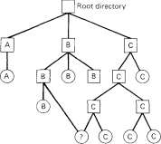

4.6.3. Memory Manager Data Structures and Algorithms
The memory manager has two key data structures: the process table and the hole table. We will now look at both of these in turn.
In Fig. 2-4 we saw that some of process table fields are needed for process management, others for memory management, and yet others for the file system. In MINIX, each of these three pieces of the operating system has its own process table, containing just those fields that it needs. The entries correspond exactly,
SEC. 4.6
OVERVIEW OF MEMORY MANAGEMENT IN MINIX
231
to keep things simple. Thus, slot k of the memory manager's table refers to the same process as slot k of the file system's table. When a process is created or destroyed, all three parts update their tables to reflect the new situation, in order to keep them synchronized.
The memory manager's process table is called mproc. It contains all the fields related to a process' memory allocation, as well as some additional items. The most important field is the array mpseg, which has three entries, for the text, data, and stack segments, respectively. Each entry is a structure containing the virtual address, physical address, and length of the segment, all measured in clicks rather than in bytes. All segments must start on a click boundary and occupy an integral number of clicks.
The method used for recording memory allocation is shown in Fig. 4-24. In this figure we have a process with 3K of text, 4K of data, a gap of IK, and then a 2K stack, for a total memory allocation of 10K. In Fig. 4-24(b) we see what the virtual, physical, and length fields for each of the three segments are, assuming that the process does not have separate I and D space. In this model, the text segment is always empty, and the data segment contains both text and data. When a process references virtual address 0, either to jump to it or to read it (i.e., as instruction space or as data space), physical address 0x32000 (in decimal, 200K) will be used. This address is at click 0x3200.
Stack
Data
Text
Address (hex)
21 OK (0x34800)
208K (0x34000) 207K(0x33C00)
203K(0x32C00)
200K(0x32000)
(a)
(c)
Fig. 4-24. (a) A process in memory, (b) Its memory representation for non-separate I and D space, (c) Its memory representation for separate I and D space.
Note that the virtual address at which the stack begins depends initially on the total amount of memory allocated to the process. If the chmem command were used to modify the file header to provide a larger dynamic allocation area (bigger gap between data and stack segments), the next time the file was executed, the stack would start at a higher virtual address. If the stack grows longer by one
MEMORY MANAGEMENT
CHAP. 4
click, the stack entry should change from the triple (0x200, 0x3400, 0x80) to the triple (OxlFF, 0x33FF, 0x81).
Because the 8088 hardware does not have a stack limit trap, this change will not be made until the next BRK system call, at which point the operating system explicitly reads SP and recomputes the segment entries. On a machine with a stack trap, the stack segment's entry would be updated as soon as the stack outgrew its segment.
Fig. 4-24(c) shows the segment entries for the memory layout of Fig. 4-24(a) for separate I and D space. Here both the text and data segments are nonzero in length.
The mpseg array shown in Fig. 4-24(b) or (c) is primarily used to map virtual addresses onto physical memory addresses. Given a virtual address and the space to which it belongs, it is a simple matter to see whether the virtual address is legal or not (i.e., falls inside a segment), and if legal, what the corresponding physical address is. The kernel procedure umap performs this mapping for the I/O tasks and for copying to and from user space, for example.
In addition to the segment information, mproc also holds the process id (pid) of the process itself and of its parent, the uids and gids (both real and effective), information about signals, and the exit status, if the process has already terminated but its parent has not yet done a WAIT for it.
The other major memory manager table is the hole table, hole, which lists every hole in memory in order of increasing memory address. The gaps between the data and stack segments are not considered holes since they have already been allocated. They are not contained in the free hole list. Each hole list entry has three fields: the base address of the hole, in clicks; the length of the hole, in clicks; and a pointer to the next entry on the list. The list is singly linked, so it is easy to find the next hole starting from any given hole, but to find the previous hole, you have to search the entire list from the beginning until you come to the given hole.
The reason for recording everything about segments and holes in clicks rather than bytes is simple: it is much more efficient. On the 8088, using byte addresses would require 20 bits per address, whereas recording addresses in clicks requires only 16 bits per address. Similar arguments hold for paging machines. A computer with a page size of IK and 64M of memory needs only 16 bits to hold a page number, but 26 bits to hold a full memory address.
The principal operations on the hole list are allocating a piece of memory of a given size and returning an existing allocation. To allocate memory, the entire hole list is searched, starting at the hole with the lowest address, until a hole that is large enough is found (first fit). The segment is then allocated by reducing the hole by the amount needed for the segment, or in the rare case of an exact fit, removing the hole from the list. This scheme is fast and simple, but suffers from both internal fragmentation (up to 15 bytes may be wasted in the final click, since an integral number of clicks is always taken) and external fragmentation.
When a process terminates and is cleaned up, its memory is returned to the
SEC. 4.6
OVERVIEW OF MEMORY MANAGEMENT IN MINIX
233
free list. If either or both of the memory's neighbors are holes, they are merged, so adjacent holes never occur. In this way, the number, location, and sizes of the holes vary continuously as the system runs. Whenever all user processes have terminated, all of available memory is once again in a single hole, ready for allocation.
4.6.4. The FORK, EXIT, and WAIT System Calls
When processes are created or destroyed, memory must be allocated or deallocated. Also, the process table must be updated, including the parts held by the kernel and the file system. It is the memory manager that coordinates all of this activity. Process creation is done by FORK, which is carried out as a series of steps, as shown in Fig. 4-25.
1. Check to see if process table is full. "j
2. Try to allocate memory for the child. j
3. Copy the parent's image to the child's memory.
4. Find a free process slot and copy parent's slot to it.
5. Enter child's memory map in process table.
6. Choose a pid for the child.
7. Tell kernel and file system about child.
8. Report child's memory map to kernel.
9. Send reply messages to parent and child.
Fig. 4-25. The steps required to carry out the FORK system call.
It is difficult and inconvenient to stop a FORK call part way through, so the memory manager maintains a count at all times of the number of processes currently in existence in order to see easily if a process table slot is available. If the table is not full, an attempt is made to allocate memory for the child. If this step also succeeds, the FORK is guaranteed to work. The newly allocated memory is then filled in, a process slot is located and filled in, a pid is chosen, and the other parts of the system informed that a new process has been created.
A process fully terminates when two events happen: (1) the process itself has exited (or has been killed by a signal), and (2) its parent has executed a WAIT system call to find out what happened. A process that has exited or has been killed, but whose parent has not (yet) done a wait for it, enters a kind of suspended animation, sometimes known as zombie state. It is prevented from being scheduled and has its alarm timer turned off (if it was on), but it is not removed from the process table. Its memory is not freed, although it could have been. (Zombie state is unusual and rarely lasts long, and it was easier to program this way.) When the parent finally does the WAIT, the memory and process table slot are freed, and the file system and kernel are informed.
A problem arises if the parent of an exiting process is itself already dead. If no special action were taken, the exiting process would remain a zombie forever. Instead, the tables are changed to make it a child of the init process. When the system comes up, init reads the letclttys file to get a list of all terminals, and then forks off a login process to handle each one. It then spends most of its time
MEMORY MANAGEMENT
CHAP. 4
waiting for processes to terminate. In this way, orphan zombies are cleaned up quickly.
4.6.5. The EXEC System Call
When a command is typed at the terminal, the shell forks off a new process, which then executes the command requested. It would have been possible to have a single system call to do both FORK and EXEC at once, but they were provided as two distinct calls for a very good reason: to make it easy to implement redirection. When the shell forks, the child process closes standard input and output if they are redirected, and then opens the redirected files. Then it executes the command, which inherits the redirected standard input and output.
exec is the most complex system call in minix. It must replace the current memory image with a new one, including setting up a new stack. It carries out its job in a series of steps, as shown in Fig. 4-26.
1. Check permissions - is the file executable?
2. Read the header to get the segment and total sizes.
3. Fetch the arguments and environment from the caller.
4. Release the old memory and allocate the new one.
5. Copy stack to new memory image.
6. Copy text and data segments to new memory image.
7. Check for and handle setuid, setgid bits.
8. Fix up process table entry.
9. Tell kernel that process is now runnable.
Fig. 4-26. The steps required to carry out the EXEC system call.
Each step consists, in turn, of yet smaller steps, some of which can fail. For example, there might be insufficient memory available. The order in which the tests are made has been carefully chosen to make sure the old memory image is not released until it is certain that the EXEC will succeed, to avoid the embarrassing situation of not being able to set up a new memory image, but not having the old one to go back to, either. Normally EXEC does not return, but if it fails, the calling process must get control again, with an error indication.
There are a few steps in Fig. 4-26 that deserve some more comment. First is the question of whether there is enough room or not. Checking to see if there is sufficient physical memory is done by searching the hole list before freeing the old memory—if the old memory were freed first and there was insufficient memory, it would be hard to get the old image back again.
However, this test is overly strict. It sometimes rejects EXEC calls that, in fact, could succeed. Suppose, for example, the process doing the EXEC call occupies 20K. Further suppose that there is a 30K hole available and that the new image requires 50K. By testing before releasing, we will discover that only 30K is available and reject the call. If we had released first, we might have succeeded, depending on whether or not the new 20K hole was adjacent to, and thus now merged with, the 30K hole. A more sophisticated implementation could handle this situation a little better.
SEC. 4.6
OVERVIEW OF MEMORY MANAGEMENT IN MINIX
235
A more subtle issue is whether the executable file fits in the virtual address space. The problem is that memory is allocated not in bytes, but in clicks (16 bytes on the 8088, 1 page on a virtual memory system). Each click must belong to a single segment, and may not be, for example, half data, half stack, because the entire memory administration is in clicks.
To see how this restriction can give trouble, note that the 64K address space of the 8088 can be divided into 4096 clicks. Suppose a separate I and D space program has 40,000 bytes of text, 32,770 bytes of data, and 32,760 bytes of stack. The data segment occupies 2049 clicks, of which the last one is only partially used; still, the whole click is part of the data segment. The stack segment is 2048 clicks. Together they exceed 4096 clicks, and thus cannot co-exist, even though the number of bytes needed fits in the virtual address space (barely). This problem exists on all machines whose click size is larger than 1 byte.
Another important issue is how the initial stack is set up. The library call normally used to invoke EXEC with arguments and an environment is
execve(name, argv, envp);
where name is a pointer to the name of the file to be executed, argv is a pointer to an array of pointers, each one pointing to an argument, and envp is a pointer to an array of pointers, each one pointing to an environment string.
It would be easy enough to implement EXEC by just putting the three pointers in the message to the memory manager, and letting it fetch the file name and two arrays by itself. Then it would have to fetch each argument and each string one at a time. Doing it this way requires at least one message to the system task per argument or string and probably more, since the memory manager has no way of knowing how big each one is in advance.
To avoid the overhead of multiple messages to read all these pieces, a completely different strategy has been chosen. The execve library procedure builds the entire initial stack inside itself and passes its base address and size to the memory manager. Building the new stack within the user space is highly efficient, because references to the arguments and strings are just local memory references, not references to a different address space.
To make this mechanism clearer, let us consider an example. When a user types
Is -1 f.c g.c
to the shell, the shell makes the call execve("/bin/ls", argv, envp);
to the library procedure. The contents of the two pointer arrays are shown in Fig. 4-27(a). The procedure execve, within the shell's address space, now builds the initial stack, as shown in Fig. 4-27(b). This stack is eventually copied intact to the memory manager duiing the processing of the EXEC call.
When the stack is finally copied to the user process, it will not be put at
MEMORY MANAGEMENT
CHAP. 4
environment array
HOME=/usr/ast
argument array
- gc -
fx.
(b)
(0
5150 5148 5146 5144 5142 5140 5138 5136 5134 5132 5130 5128 5126 5124 5122 5120 5118 5116 5114 5112 5110
envp argv argc
Fig. 4-27. (a) The arrays passed to execve. (b) The stack built by execve. (c) The stack after relocation by the memory manager, (d) The stack as it appears to main at the start of execution.
virtual address 0. Instead, it will be put at the end of the memory allocation, as determined by the total memory size field in the executable file's header. As an example, let us arbitrarily assume that the stack begins at address 5110. It is up to the memory manager to relocate the pointers within the stack so that when deposited into the new address, the stack looks like Fig. 4 27(c).
When the EXEC call completes and the program starts running, the stack will indeed look exactly like Fig. 4-27(c), with the stack pointer having the value 5110. However, another problem is yet to be dealt with. The main program of the executed file is probably declared something like this:
main(argc, argv, envp);
As far as the C compiler is concerned, main is just another function. It does not know that main is special, so it compiles code to access the three parameters on the assumption that they will be passed according to the standard C calling convention, last parameter first. With one integer and two pointers, the three parameters are expected to occupy the three words just before the return address. Of course, the stack of Fig. 4-27(c) does not look like that at all.
SEC. 4.6 OVERVIEW OF MEMORY MANAGEMENT IN MINIX 237
The solution is that newly executed files do not begin with main. Instead, a small, assembly language routine called the C run-time, start-off procedure, is always linked in at text address 0 so it gets control first. Its job is to push three more words onto the stack and then to call main using the standard call instruction. This results in the stack of Fig. 4-27(d) at the time that main starts executing. Thus, main is tricked into thinking it was called in the usual way (actually, it is not really a trick; it is called that way).
If the programmer neglects to call exit at the end of main, control will pass back to the C run-time, start-off routine when main is finished. Again, the compiler just sees main as an ordinary procedure, and generates the usual code to return from it after the last statement. Thus main returns to its caller, the C run-time, start-off routine which then calls exit itself. The MINIX C run-time, start-off routine is called crtso and is located in the directory lib and its subdirectories, for various compilers.
4.6.6. The brk System Call
The library procedures brk and sbrk are used to adjust the upper bound of the data segment. The former takes an absolute size and calls BRK. The latter takes a positive or negative increment to the current size, computes the new data segment size, and then calls BRK. There is no SBRK system call.
An interesting question is: "How does sbrk keep track of the current size, so it can compute the new size?" The answer is that a variable, brksize, always holds the current size so sbrk can find it. This variable is initialized to a compiler generated symbol giving the initial size of text plus data (nonseparate I and D) or just data (separate I and D). The name, and, in fact, very existence of such a symbol is compiler dependent.
Carrying out BRK is easy for the memory manager. All that must be done is to check to see that everything still fits in the address space, adjust the tables, and tell the kernel.
4.6.7. Signal Handling
Signals can be generated in two ways: by the KILL system call, and by the kernel. The kernel generated signals currently implemented are SIGINT, SIGQUIT, and SIGALRM, but if MINIX is ever ported to a machine that traps on illegal instructions, detects illegal addresses, or notices other hardware violations, the corresponding signals will also be generated by the kernel.
Whatever their origin, the memory manager processes all signals the same way. For each process to be signaled, a variety of checks are made to see if the signal is feasible. One process can signal another if both have the same uid, and were started from the same terminal. Furthermore, neither zombies nor processes that have explicitly called SIGNAL to ignore the signal can be signaled.
MEMORY MANAGEMENT
CHAP. 4
If all the conditions are met, the signal can be sent. If the signal is to be caught, a message is sent to the system task within the kernel, requesting that it push the 4 words of Fig. 4-28 onto the signaled process' stack. The exact layout of the words pushed is designed to be identical to what a hardware trap pushes (plus the signal number), so porting MINIX to a different system implies changing the layout of Fig. 4-28 accordingly.
Fig. 4-28. The four words pushed onto the stack of a signaled process on the 8088.
After the process has received the interrupt, a run time system routine, catchsig, is called. This routine first saves all the registers on the stack. Then it uses the signal number as an index into a local table to find the C function to be called. When the user executes a SIGNAL call, the pointer to the function to be called is stored in a local table; the memory manager is merely told which signal is being enabled. It is also given the address of catchsig, which it traps to on all signals. After catchsig has found the pointer to the signal handler, it calls the handler.
When the handler is done, it returns to catchsig, which restores the registers and does a RETURN FROM INTERRUPT instruction to resume processing at the point it was prior to the interrupt. Interrupts are completely invisible to the interrupted program.
If a signal is sent to a process that has not been enabled to handle it, the memory manager kills the process. If the parent is waiting for it, it is cleaned up and removed from the process table. If the parent is not waiting, it becomes a zombie. For certain signal numbers (e.g., SIGQUIT), the memory manager also writes a core dump of the process to the current directory.
It can easily happen that a signal is sent to a process that is currently blocked waiting for a READ on a terminal for which no input is available. If the process has not specified that the signal is to be caught, it is just killed in the usual way. If, however, the signal is caught, the issue arises of what to do after the signal interrupt has been processed. Should the process go back to waiting, or should it continue with the next statement?
What MINIX does is this: the system call is terminated in such a way as to return the error code EINTR, so the process can see that the call was broken off by a signal. Determining that a signaled process was blocked on a system call is not entirely trivial. The memory manager must ask the file system to check for it.
SEC. 4.6 OVERVIEW OF MEMORY MANAGEMENT IN MINIX 239
4.6.8. Other System Calls
The memory manager also handles a few more simple system calls: GETPID, GETUID, GETGID, SETUID, and SETGID. The first three calls just look up and return the requested information. GETUID returns both the real and effective uid. Depending on whether getuid or geteuid was called, one or the other is extracted from the message and returned to the user. The same holds for the gid. These five calls are the simplest MINIX system calls.
4.7. IMPLEMENTATION OF MEMORY MANAGEMENT IN MINIX
Armed with a general overview of how the memory manager works, let us now turn to the code itself. The memory manager is written entirely in C, is straightforward and contains a substantial amount of comment in the code itself, so our treatment of most parts need not be long or involved. We will first look briefly at the header files, then the main program, and finally the files for the various system call groups discussed previously.
4.7.1. The Header Files
The file const.h (line 5150) defines a few constants used by the memory manager. The conditional declaration of MM^STACK-BYTES is needed primarily for the array mbuf 'm exec.c. The array is used for several purposes and has to be large enough for all of them.
The memory manager's global variables are declared in glo.h (line 5200). The same trick used in the kernel with EXTERN is used here, namely, that EXTERN is normally a macro that expands to extern, except in the file table.c, where it becomes the null string so storage is actually reserved for them.
The first variable, mp, is a pointer to the mproc structure for the process whose system call is now being processed. The second variable, dont^reply, is initialized to FALSE when each new request arrives, but can be set to TRUE during the call if it is discovered that no .reply message should be sent. No replies are sent for a successful EXEC, for example. The third variable, procs-in-use, keeps track of how many process slots are currently in use, making it easy to see if a FORK call is feasible.
The message buffers mni-in and mm-out are for the request and reply messages, respectively. Who is the index of the current process and is related to mp by
mp = &mproc[who];
When a message comes in, the system call number is extracted from it and put in mm—call.
MEMORY MANAGEMENT
CHAP. 4
The three variables err^code, result!, and res^ptr are used to hold values returned to the caller in the reply message. The most important one is err^code, which generally is set to OK if the call was completed without error.
The array mmstack holds the memory manager's stack. The stack pointer is initialized to point to it in a tiny assembly code routine, called head, that is called before main starts. In a sense, head is analogous to crtso, which is not linked with the memory manager or file system, because they do not have arguments.
The file mproc.h (line 5250) contains the memory manager's version of the process table. Most of the fields are adequately described by their comments. The two bit maps, mp-ignore and mp-catch, each contain 16 bits, 1 bit per signal, with signal 1 being the rightmost bit. The mp-flags field is used to hold a miscellaneous collection of bits, as indicated at the end of the file.
Next comes param.h (line 5300), which contains macros for many of the system call parameters contained in the request message. It also contains three macros for fields in the reply message. If the statement
k = pid;
were to appear in any file in which param.h were included, the preprocessor would convert it to
k = mm_in.ml_il;
before feeding it to the compiler proper.
The final header file is type.h (line 5350). All it does is include the global type definition file. It is merely included for symmetry, since the kernel and file system have nonempty type.h files.
4.7.2. The Main Program
The memory manager is compiled and linked independently from the kernel and the file system. Consequently, it has its own main program, which is started up after the kernel has finished initializing itself. The main program is in main.c (line 5400). After doing its own initialization (line 5441), the memory manager enters its loop on line 5444. In this loop, it calls get-work to wait for an incoming request message, calls one of its do-XXX procedures via the mm-callvec table to carry out the request, and finally sends a reply, if needed. This structure should be familiar by now: it is the same used by the I/O tasks.
The procedures get-work (line 5471) and reply (line 5485) handle the actual receiving and sending, respectively. The remaining procedures in this file are all concerned with initializing the memory manager. They are not used after the system has started running.
SEC. 4.7 IMPLEMENTATION OF MEMORY MANAGEMENT IN MINIX
241
4.7.3. Implementation of FORK, EXIT, and WAIT
The fork, exit, and wait system calls are implemented by the procedures do-fork, do-mm-exit, and do-wait in the file forkexit.c. The procedure do-fork (line 5683) follows the steps shown in Fig. 4-25. Notice that it reserves the last few process table slots for the super-user. After computing how much memory the child needs, including the gap between the data and stack segments on the 8088, mem-copy is called to send a message to the system task to get the copying done.
Now a slot is found in the process table. The test involving procs-in^use earlier guarantees that one will exist. After the slot has been found, it is filled in, first by copying the parent's slot there, and afterward by updating the mp_parent, mpseg, mp^exitstatus, and mpsigstatus fields.
The next step is assigning a pid to the child. The variable next-pid keeps track of the next pid to be assigned. However, the following problem could conceivably occur. After assigning, say, pid 20 to a very long-lived process, 30,000 more processes might be created and destroyed, and next^pid might come back to 20 again. Assigning a pid that was still in use would be a disaster (suppose someone later tried to signal process 20), so we search the whole process table to make sure that the pid to be assigned is not already in use.
The calls to sys_forked and telLfs inform the kernel and file system, respectively, that a new process has been created, so they can update their process tables. (All the procedures beginning with sys- are library routines that send a message to the system task in the kernel to request one of the services of Fig. 3-39.) Process creation and destruction are always initiated by the memory manager and then propagated to the kernel and file system when completed.
The reply message to the child is sent explicitly at the end of do-fork. The reply to the parent, containing the child's pid, is sent by the loop in main, as the normal reply to a request.
The next system call handled by the memory manager is EXIT. The procedure do-mm-exit (line 5767) accepts the call, but most of the work is done by mm-exit, a few lines further down. The reason for this division of labor is that mm-exit is also called to take care of processes terminated by a signal. The work is the same, but the parameters are different, so it is convenient to split things up this way.
The action taken by mm_exit depends on whether the parent is already waiting or not. If so, cleanup is called to release the memory and process table slot, and to get rid of the process entirely. If the parent is not waiting, the process becomes a zombie, indicated by the HANGING bit in the mp-flags word. Either way, if it has a running timer, the timer is killed. The call to the library procedure sys-xit sends a message to the system task telling it to mark the process as no longer runnable, so it will not be scheduled any more.
When the parent process does a WAIT, control comes to do-wait on line 5809. The loop in do^wait scans the entire process table to see if the process has
MEMORY MANAGEMENT
CHAP. 4
any children at all, and if so, checks to see if any are zombies that can now be cleaned up. If a zombie is found (line 5828), it is cleaned up. The flag dont-reply is set because the reply to the parent is sent from inside cleanup, not from the loop in main.
If the process doing the WAIT has no children, it simply gets an error return (line 5842). If it has children, but none are zombies, then a bit is set on line 5838 to indicate that it is waiting, and the parent is suspended until a child terminates.
When a process has exited and its parent is waiting for it, in whichever order these events occur, the procedure cleanup (line 5849) is called to perform the last rites. The parent is awakened from its WAIT call and is given the pid of the terminated child, as well as its exit and signal status. The file system is told to mark the child's entry as free. (The kernel is told when the process terminates, as it must suspend scheduling immediately.) Then the child's memory is freed and the parent's and child's flags are updated.
The last step has to do with the problem discussed earlier of what happens to a process if its parent dies. To see if any existing process is a child of the process trying to exit, all the processes are inspected. If the test on line 5890 succeeds, the exiting process has children.
It is possible that a situation such as shown in Fig. 4-29(a) occurs. In this figure we see that process 12 is about to exit, and that its parent, 7, is waiting for it. Cleanup will be called to get rid of 12, so 52 and 53 are turned into children of init, as shown in Fig. 4-29(b). Now we have the situation that 53, which has already exited, is the child of a process doing a WAIT. Consequently, it can also be cleaned up. The code on lines 5893 to 5897 takes care of this. We see here one of the very few recursive calls in MINIX.
Fig. 4-29. (a) The situation as process 12 is about to exit, (b) The situation after it has exited.
4.7.4. Implementation of EXEC
The code for EXEC follows the outline of Fig. 4 26. It is contained in the procedure do^exec (line 5934). After making a few simple validity checks, the memory manager fetches the name of the file to be executed from the user space.

Zombie
(a)
(b)
SEC. 4.7 IMPLEMENTATION OF MEMORY MANAGEMENT IN MINIX 243
On line 5965 it sends a special message to the file system, to switch to the user's directory, so that the path just fetched will be interpreted relative to the user's, rather than to MM's, working directory.
If the file is present and executable, the memory manager reads the header to extract the segment sizes. Then it fetches the stack from user space (line 5981), allocates memory for the new image (line 5988), patches up the pointers [see the differences between Fig. 4-27(b) and (c)], and reads in the text and data segments (lines 6003 and 6004). Finally, it processes the setuid and setgid bits, updates the process table entry, and tells the kernel that it is finished, so that the process can be scheduled again.
Although the control of all the steps is in do-exec, many of the details are carried out by subsidiary procedures within exec.c. Read-header, for example, not only reads the header and returns the segment sizes, but also verifies that all the segments fit in the virtual address space.
Procedure new-mem checks to see if sufficient memory is available for the new memory image. If so, the old memory is released and the new memory acquired. If insufficient memory is available, the EXEC call fails. After the new memory is allocated, new-mem updates the memory map (in mpseg) and reports it to the kernel by calling the library procedure sys^newmap.
The remainder of new-map is concerned with zeroing the bss segment, gap, and stack segment. (The bss segment is that part of the data segment that contains all the uninitialized global variables.) Many compilers generate explicit code to zero the bss segment, but doing it here allows MINIX to work even with compilers that do not explicitly zero the bss. The gap between data and stack segments is also zeroed, so that when the data segment is extended by BRK, the newly acquired memory will contain zeros.
The next procedure is patch-ptr (line 6183), which does the job of relocating the pointers of Fig. 4-27(b) to the form of Fig.4-27(c). The work is simple: Examine the stack to find all the pointers, and add the base address to each one.
The final procedure in exec.c is loadseg (line 6216), which is called twice per EXEC, once to load the text segment and once to load the data segment. Rather than just reading the file block by block and then copying the blocks to the user, a trick is used to allow the file system to load the entire segment directly to the user space. Loading is appreciably speeded up by this maneuver. In effect, the call is decoded by the file system in a slightly special way so that it appears to be a read of the entire segment by the user process itself. Only a few lines at the beginning of the file system's read routine know that some monkey business is going on here.
4.7.5. Implementation of BRK
As we have just seen, the memory model used by MINIX is quite simple. Each process is given a single contiguous allocation when it is created. It is never moved around in memory, it is never swapped out of memory, it never
MEMORY MANAGEMENT
CHAP. 4
grows, and it never shrinks. All that can happen is that the data segment can eat away at the gap from the low end, and the stack can eat away at it from the high end. Under these circumstances, the implementation of the BRK call is especially easy. It consists of verifying that the new sizes are feasible, and then updating the tables to reflect them.
The top-level procedure is do^brk (line 6283), but most of the work is done in adjust. The latter checks to see if the stack and data segments have collided. If they have, the BRK call cannot be carried out, but the process is not killed immediately. It gets control back (with an error message), so it can print appropriate messages and shut down gracefully.
If adjust has to adjust the data segment, all it does is update the length field. If it also notices that the stack pointer, which is given to it as a parameter, has grown beyond the stack segment, both the origin and length are updated.
The procedure size-ok makes the test to see if the segment sizes fit within the address space, in clicks as well as in bytes. The last procedure in this file, stack-fault, is not used at present. If MINIX is ever ported to a machine that traps when the stack pointer moves outside the stack segment, then the memory manager will have to handle stack growth, analogous to data segment growth. This procedure will then be of use.
4.7.6. Implementation of Signal Handling
The four system calls relating to signals, SIGNAL, KILL, ALARM, and PAUSE, as well as the signals themselves, are processed in the file signal.c. Let us start with the SIGNAL call, since it is the easiest (line 6488). First the memory manager checks to see that the signal number is valid. If it is, the two bit maps, one for signals to be ignored and one for signals to be caught, are updated. Each bit map has 16 bits, one for each of signals 1 to 16, with signal 1 the rightmost bit.
Next come two procedures, doJcill (line 6519) and doJcsig (line 6530), that are conceptually similar. Both are used to cause the memory manager to send a signal. Do-kill is called when a user process issues a KILL system call. DoJcsig is called when a message arrives from the kernel with one or more signals.
Although doJisig has code to handle stack faults, the kernel does not generate them at present. This feature may be useful on other machines, however. Messages from the kernel may contain multiple signals, which are examined and processed one bit at a time by the loop on line 6564. Each signal bit set results in a call to check^sig, just as in do-kill.
The procedure checksig is where the memory manager checks to see if the signal can be sent. The call
kill(0, sig);
causes the indicated signal to be sent to all the processes in the caller's group (i.e., all the processes started from the same terminal). For this reason,
SEC. 4.7 IMPLEMENTATION OF MEMORY MANAGEMENT IN MINIX
245
checksig contains a loop on line 6602 to scan through the process table to find all the processes to which a signal should be sent. The loop contains a large number of tests. Only if all of them are passed is the signal sent, by calling sig-proc on line 6627.
Now we come to sig-proc (line 6640), which actually does the signaling. The key test here is to distinguish processes that have been enabled to catch signals from those that have not. Those processes that want to catch signals but do not have enough stack space left for the interrupt information, are not signaled. If the signal is to be caught, the call to syssig on line 6663 sends a message to the system task requesting it to cause the signal.
If the signal is not to be caught (or cannot be caught due to lack of stack space), control passes to line 6668 to allow mm^exit to terminate the process as though it had exited. Then tries to dump core if that is appropriate for the signal class.
The third system call handled in signal.c is ALARM, which is controlled by do-alarm (line 6679). The work, done by set-alarm (line 6695), consists of sending a message to the clock task telling it to start the timer. When the timer runs out, the kernel announces the fact by sending the memory manager a message of type KSIG, which causes doJ<sig to run, as discussed above. The complete sequence of events for a SIGALRM signal is shown in Fig. 4-30.
Layer
Fig. 4-30. Messages for an alarm. (1) User does ALARM. (2) MM sends request to clock task. (3) Clock task replies. (4) Signal arrives. (5) MM tells system task to copy interrupt block to user space. (6) Reply.
The final system call is PAUSE. All that is necessary for do^pause (line 6723) to do is set a bit and refrain from replying, thus keeping the caller blocked. The kernel need not even be informed, since the kernel knows that the caller is blocked.
MEMORY MANAGEMENT
CHAP. 4
The procedure unpause (line 6736) has to do with signals that are sent to processes suspended on READ, WRITE, PAUSE, and WAIT calls. The latter two can be checked directly, but the former two require asking the file system.
The final procedure in this file is dump-core (line 6774), which writes core dumps, block by block, to the disk.
4.7.7. Implementation of the Other System Calls
The file getset.c contains one procedure, do-getset (line 6867), which carries out the five remaining memory manager calls: GETPID, GETUID, GETGID, SETUID, and SETGID. They are all so simple that they are not worth an entire procedure each. The GETUID and GETGID calls both return the real and effective uid or gid.
Setting the uid or gid is slightly more complex than just reading it. A check has to be made to see if the caller is authorized to set the uid or gid. If the caller passes the test, the file system must be informed of the new uid or gid, since file protection depends on it.
4.7.8. Memory Manager Utilities
The remaining files contain utility routines and tables. The file alloc.c is where the system keeps track of which parts of memory are in use and which are free. It has four entry points:
alloc^mem - request a block of memory of a given size.
free-mem - return memory that is no longer needed.
max-hole - compute the size of the largest available hole.
mem-init - initialize the free list when the memory manager starts running.
As we have said before, alloc-mem (line 6987) just uses first fit on a list of holes sorted by memory address. If it finds a piece that is too big, it takes what it needs and leaves the rest on the free list, but reduced in size by the amount taken. If an entire hole is needed, deLslot (line 7072) is called to remove the entry from the free list.
Free-mem"% job is to check if a newly released piece of memory can be merged with holes on either side. If it can, merge (line 7095) is called to join the holes and update the lists.
MaxJkole (line 7131) scans the hole list and returns the largest item it finds. Mem-init (line 7153) builds the initial free list, consisting of all available memory in one big hole.
The next file is utility, c, which holds a few miscellaneous procedures used in various places in the memory manager. The procedure allowed (line 7224) checks to see if a given access is allowed to a file.
For example, do-exec needs to know if a file is executable. Mem-copy is the interface to the system task for copying data around in memory. It is used to copy the parent image to the child for FORK, and similar things.
SEC. 4.7 IMPLEMENTATION OF MEMORY MANAGEMENT IN MINIX
247
The procedure no-jsys (line 7298) should never be called. It is provided just in case a user ever calls the memory manager with a system call number that is invalid or is not handled by the memory manager.
Panic (line 7309) is called only when the memory manager has detected an error from which it cannot recover. It reports the error to the system task, which then brings MINIX to a screeching halt. It is not called lightly.
The two procedures in the file putc.c are also utilities, although of quite a different character from the previous ones. From time to time, calls to printf are inserted into the memory manager, mostly for debugging. Also, panic calls printf. The name printf is actually a macro defined as printk, so that calls to printf do not use the standard I/O library procedure that sends messages to the file system. Printk calls putc to communicate directly with the terminal task, something that is forbidden to ordinary users.
Our final file is table.c. It contains key statements on lines 7408 and 7409. Together, these redefine the macro EXTERN to be the null string, so that when all the include files are expanded during the compilation of table, c, the word extern will not be present, and storage will be allocated for all the variables.
The other major feature of table, c is the array nwucallvec. When a request message arrives, the system call number is extracted from it and used as an index into mm-callvec to locate the procedure that carries out that system call (see line 5458). System call numbers that are not valid calls all invoke nosys, which just returns an error code.
4.8. SUMMARY
In this chapter we have examined memory management, both in general and in MINIX. We saw that the simplest systems do not swap at all. Once a program is loaded into memory, it remains there until it finishes. Some operating systems allow only one process at a time in memory, while others support multiprogramming.
The next step up is swapping. When swapping is used, the system can handle more processes than it has room for in memory. Processes for which there is no room are swapped out to the disk. Free space in memory and on disk can be kept track of with a bit map, a hole list, or the buddy system.
More advanced computers often have some form of virtual memory. In the simplest form, each process' address space is divided up into uniform sized blocks called pages, which can be placed into any available page frame in memory. Many page replacement algorithms are known, two of the better ones being second chance and aging. Sometimes segmentation and paging are combined to provide a two-dimensional virtual memory.
Memory management in MINIX is very simple. Memory is allocated when a process executes a FORK or EXEC system call. The memory so allocated is never
MEMORY MANAGEMENT
CHAP. 4
increased or decreased as long as the process lives. Most of the work of the memory manager is concerned not with keeping track of free memory, which it does using a hole list and the first fit algorithm, but with carrying out the system calls relating to memory management.
PROBLEMS
1. Consider a swapping system in which memory consists of the following hole sizes in memory order: 10K, 4K, 20K, 18K, 7K, 9K, 12K, and 15K. Which hole is taken for successive segment requests of
(a) 12K
(b) 10K
(c) 9K
for first fit? Now repeat the question for best fit, worst fit, and next fit.
2. Using the model of Fig. 4-2, we can predict the increased throughput as a function of the degree of multiprogramming. Suppose that a computer has a 2M memory, of which the operating system takes 512K (one quarter of memory) and each user program also takes 512K. If all programs have 60 percent I/O wait, by what percentage will the throughput increase if another 1M is added?
3. Some swapping systems try to eliminate external fragmentation by compaction. Imagine that a computer with 1M user memory compacts once every second. If it takes 1/2 microsec to copy a byte, and the average hole is 0.4 as large as the average segment, what fraction of the total CPU time is used up on compaction?
4. A minicomputer uses the buddy system for memory management. Initially it has one block of 256K at address 0. After successive requests for 5K, 25K, 35K, and 20K come in, how many blocks are left and what are their sizes and addresses?
5. In a swapping system with variable partitions, the segments have the probability distribution e "" 10 /10, where 5 is the segment size in kilobytes. The holes have the probability distribution e~ hl5 /5 where h is the hole size in kilobytes. What is the average fraction of wasted memory?
6. Using the page table of Fig. 4-11, give the physical address corresponding to each of the following virtual addresses:
(a) 20
(b) 4100
(c) 8300
7. The Intel 8086 processor does not support virtual memory. Nevertheless, some companies have sold systems that contain an unmodified 8086 CPU and do paging. Make an educated guess as to how they did it. (Hint: think about the logical location of the MMU.)
CHAP. 4
PROBLEMS
249
8. Imagine that a computer uses a segmented MMU such as the one of Fig. 4-13, except that the process number is 3 bits and virtual address spaces are 8M with 4K pages and 32K segments. How many words are needed to hold all the page pointers? If the segment size is now changed to 64K, without changing any of the other parameters (i.e., fewer, but larger segments), how does that affect the number of page table pointers needed?
9. If an instruction takes 1 microsec and a page fault takes an additional n microsec, give a formula for the effective instruction time if page faults occur every k instructions on the average.
10. Below is the listing of a short assembly language program for a computer with 512-byte pages. The program is located at address 1020, and its stack pointer is at 8192 (the stack grows toward 0). Give the page reference string generated by this program. Each instruction occupies 4 bytes (1 word), and both instruction and data references count in the reference string.
Load word 6144 into register 0 Push register 0 onto the stack
Call a procedure at 5120, stacking the return address Subtract the immediate constant 16 from the stack pointer Compare the actual parameter to the immediate constant 4 Jump if equal to 5152
11. A computer whose processes have 1024 pages in their address spaces keeps its page tables in memory. The overhead required for reading a word from the page table is 500 nsec. To reduce this overhead, the computer has an associative memory, which holds 32 (virtual page, physical page frame) pairs, and can do a look up in 100 nsec. What hit rate is needed to reduce the mean overhead to 200 nsec?
12. A computer has four page frames. The time of loading, time of last access, and the R and M bits for each page are as shown below (the times are in clock ticks):
(a) Which page will NRU replace?
(b) Which page will FIFO replace?
(c) Which page will LRU replace?
(d) Which page will second chance replace?
13. If FIFO page replacement is used with four page frames and eight pages, how many page faults will occur with the reference string 0172327103 if the four frames are initially empty? Now repeat this problem for LRU.
14. A small computer has four page frames. At the first clock tick, the R bits are 0111 (page 0 is 0, the rest are 1). At subsequent clock ticks, the values are 1011, 1010, 1101, 0010, 1010, 1100, and 0001. If the aging algorithm is used with an 8-bit counter, give the values of the four counters after the last tick.
MEMORY MANAGEMENT
CHAP. 4
15. How long does it take to load a 64K program from a disk whose average seek time is 30 msec, whose rotation time is 20 msec, and whose tracks hold 32K
(a) for a 2K page size?
(b) for a 4K page size?
The pages are spread randomly around the disk.
16. One of the first time-sharing machines, the PDP-1, had a memory of 4K 18-bit words. It held one process at a time in memory. When the scheduler decided to run another process, the process in memory was written to a paging drum, with 4K 18-bit words around the circumference of the drum. The drum could start writing (or reading) at any word, rather than only at word 0. Why do you suppose this drum was chosen?
17. A computer provides each process with 65536 bytes of address space divided into pages of 4096 bytes. A particular program has a text size of 32768 bytes, a data size of 16386 bytes, and a stack size of 15870 bytes. Will this program fit in the address space? If the page size were 512 bytes, would it fit? Remember that a page may not contain parts of two different segments.
18. It has been observed that the number of instructions executed between page faults is directly proportional to the number of page frames allocated to a program. If the available memory is doubled, the mean interval between page faults is also doubled. Suppose that a normal instruction takes 1 microsec, but if a page fault occurs, it takes 2001 microsec. If a program takes 60 sec to run, during which time it gets 15,000 page faults, how long would it take to run if twice as much memory were available?
19. Why does the MINIX memory management scheme make it necessary to have a program like chmeml
20. When a MINIX process makes the signal system call to cause some signal to be caught, the address of the function to be called is stored in a table within the process itself, rather than in the memory manager. Give an advantage of doing things in this way .
21. Modify MINIX to release a zombie's memory as soon as it enters the zombie state, rather than waiting until the parent waits for it.
22. In the current implementation of MINIX, when an EXEC system call is made, the memory manager checks to see if a hole large enough to contain the new memory image is currently available. If not, the call is rejected. A better algorithm would be to see if a sufficiently large hole would be available after the current memory image was released. Implement this algorithm.
23. When carrying out an exec system call, MINIX uses a trick to have the file system read in entire segments at once. Devise and implement a similar trick ts allow core dumps to be written in a similar way.
24. Modify MINIX to do swapping.
FILE
SYSTEMS
The most visible part of any operating system is the file system. Most programs read or write at least one file, and users are always aware of the existence of files and their properties. For many people, the convenience and usability of the operating system is largely determined by the interface, structure, and reliability of the file system.
In this chapter we will look at the various ways a file system can appear to its users, how file systems are implemented, how files are protected against unauthorized usage, and finally, how the MINIX file system has been designed and implemented. We will also look at some design issues specific to distributed operating systems.
5.1. THE USER VIEW OF THE FILE SYSTEM
From the user's standpoint, the most important aspect of a file system is how it appears to him, that is, what constitutes a file, how files are named and protected, what operations are allowed on files, and so on. The details of whether linked lists or bit maps are used to keep track of free storage and how many sectors there are in a logical block are of less interest, although they are of great importance to the designers of the file system. In the following sections we will discuss a number of issues relating primarily to the user interface. Later on in the chapter we will look at how file systems are implemented.
251
FILE SYSTEMS
CHAP. 5
5.1.1. File Basics
The best way to store information in a computer would be to provide each process with a large number of very large segments, for example, 2 32 segments, each 2 32 bytes long. When someone first began using a computer, he would be given a shell with standard segments in its address space (e.g., editors, compilers, and other utilities). As time went on, all the text typed in by the user, all the binaries of his programs, and all information acquired from third parties would accumulate in the shell's address space. Some of the segments would contain directories, to provide a hierarchical naming scheme for files (e.g., like UNIX).
This address space would be inherited by all processes, which could add more segments and then return the address space to the shell when finished. Accessing information would then just be a matter of reading and writing (virtual) memory.
In practice, this way of storing information is not yet feasible, although mul-TICS made a serious attempt at it. For one thing, current address spaces are much too small and not all computers have virtual memory. For another, when a process crashes, its address space is normally lost, making address spaces ill-suited for long-term (e.g., months or years) storage. Still, as technology advances, the concept of holding all of a user's information within the address space of each of his processes will no doubt be reexamined from time to time.
While waiting for the millenium, most operating systems take a different approach to storing information. They allow users to define named objects called files, which can hold programs, data, or anything else the user wants. These files are not part of the address space of any process. Instead, the operating system provides special operations (i.e., system calls) to create and destroy them, read and write them, and manage them in other ways.
Figure 5-1 illustrates three common file organizations. The first way is a simple byte sequence. UNIX files are structured this way. The second way is a sequence of fixed-size records. Arbitrary records can be read or written, but records cannot be inserted or deleted in the middle of a file. CP/M works like this.
The third way is a tree of disk blocks, each block holding n keyed records. Records can be looked up by key, and new records can be inserted anywhere in the tree. If a record is added to a block that is full, the block is split into two blocks, both of which are then added to the tree in their correct alphabetical sequence. This method is used on many mainframes, where it is called ISAM (Indexed Sequential Access Method).
All operating systems aim at device-independence, that is, making access the same no matter where the file (or device) is. A program that reads an input file, sorts it, and writes the sorted output file should be able to work with files on floppy disk or hard disk, and should be able to write its output on a file, a terminal, or a printer without having special code to check for each of these cases.
SEC. 5.1 THE USER VIEW OF THE FILE SYSTEM 253

Hen Ibis Lamb
(a) (b) (c)
Fig. 5-1. Three kinds of flies, (a) Byte sequence, (b) Record sequence, (c) Tree.
Some operating systems are better at device-independence than others. In UNIX, for example, a file system (e.g., a disk) can be mounted anywhere in the file tree, allowing any file to be accessed by its path name, without regard to which device it is on. In MS-DOS, on the other hand, the user must explicitly specify which device each file is on (except that one device is default and may be omitted). Thus if the default device is drive C:, to run a program located on drive A: with input and output files on drive B:, one would have to type:
Arprogram <B:input >B:output
Most operating systems have many distinct file types. UNIX, for example, has regular files, directories, and special files (block and character). Regular files contain user data. Directories contain the information needed to give files symbolic names (i.e., ASCII strings). Block and character special files are used to model disk devices and terminal-like devices, respectively, so that one can say, for example
cp abc /dev/tty
to copy a file, abc, to the terminal (character special file /dev/tty). Some versions of UNIX also support named pipes, which are pseudofiles that can be opened by two processes to set up an interprocess communication channel between them. As far as the user is concerned, the differences between these different file types are minimal (e.g., seeks on terminals are not allowed).
In most systems, regular files are further subdivided into different types based on their usage. The different types are distinguished by names that end with different file extensions. For example,
FILE.PAS - Pascal source program FILE.FTN - FORTRAN source program
FILE SYSTEMS
CHAP. 5
FILE.BAS - BASIC source program
FILE.OBJ - Object file (compiler output, not yet linked)
FILE.BIN - Executable binary program
FILE.LIB - Library of .OBJ files used by the linker
FILE.TXT - Input text for the formatting program
FILE.DAT -Data file
In some systems the extensions are simply a convention; the operating system itself does not use them for anything. In other systems, the operating system rigidly enforces rules relating to the naming. For example, it will not execute a file unless it ends in .BIN.
The TOPS-20 system goes so far as to examine the creation time of any file to be executed. Then it locates the source file and sees if the source has been modified since the binary was made. If it has, it automatically recompiles the source. In UNIX terms, the make program has been built into the shell. The extensions are mandatory so the operating system can tell which binary program was derived from which source.
Having strongly typed files like this causes problems whenever the user does anything that the system designers did not expect. Consider, as an example, a system in which program output files have type .DAT (data files). If a user writes a program that reads a .PAS file, transforms it (e.g., by converting it to a standard indentation layout), and then writes the transformed file as output, the output file will be of type .DAT. If the user tries to offer this to the Pascal compiler to compile it, the system will refuse because it has the wrong extension. Attempts to copy FILE.DAT to FILE.PAS will be rejected by the system as invalid (to protect the user against mistakes).
While this kind of "protection" may help novices, it drives experienced users up the wall since they have to devote considerable effort to circumventing the operating system's idea of what is reasonable and what is not.
The operations available on files differ slightly from operating system to operating system. Reading and writing bytes (or records) sequentially are always provided. Random access is commonly provided where that makes sense (on a regular file, but not on the special file for the line printer). In some operating systems random access is achieved by having the READ system call specify the number (or key) of the record to be read or written. In other systems (e.g., UNIX) a system call is provided to set the "current file position" anywhere within the file, so that subsequent READ or WRITE calls will operate at the new current position. Record-oriented files usually have operations to insert and delete records.
5.1.2. Directories
To keep track of files, the file system normally provides directories, which, in many systems, are themselves files. A directory typically contains a number of entries, one per file, as shown in Fig. 5-2. The simplest way is for the system
SEC. 5.1
THE USER VIEW OF THE FILE SYSTEM
255
to maintain a single directory containing all the riles of all the users. If there are many users, and they choose the same file names (e.g., mail and games), conflicts and confusion will quickly make the system unworkable. This system model is used only by the most primitive microcomputer operating systems.
Directory
Entry
Entry
Entry
Entry
Information about each file
File name File type File size Owner
Protection information
Usage count
Creation time
Time of last modification
List of disk blocks used
Fig. 5-2. A directory may have several entries, each describing one file. The entries may either contain information about the tile, or point to other structures that do.
An improvement on the idea of having a single directory for all files is to have one directory per user [see Fig. 5-3(b)]. This design eliminates name conflicts among users, but is not very satisfactory for users with many files. It is quite common for users to want to group their files together in logical ways. A professor, for example, might have a collection of files that together form a book that he is writing for one course, a second collection of files containing student programs submitted for another course, a third group of files containing the code of an advanced compiler-writing system he is building, a fourth group of files containing grant proposals, as well as other files for incoming and outgoing mail, minutes of committee meetings, papers he is writing, games, and so on. Some way is needed to group these files together reasonably.
What is needed is a general hierarchy (i.e., a tree of directories). With this approach, each user can have as many directories as are needed so that files can be grouped together in natural ways. This approach is shown in Fig. 5-3(c).
When the file system is organized as a directory tree, some way is needed for specifying file names. Two different methods are commonly used. In the first method, each file is given an absolute path name consisting of the path from the root directory to the file. As an example, the path Iusrlastlmailbox means that the root directory contains a subdirectory usr, which in turn contains a subdirectory ast, which contains the file mailbox. Absolute path names always start at the root directory and are unique.
The other kind of name is the relative path name. This is used in conjunction with the concept of the working directory (also called the current directory). A user can designate one directory as the current working directory, in which case all path names not beginning at the root directory are taken relative to the working directory. In UNIX, all path names beginning with a slash are absolute; all others are relative to the user's current working directory. If the current
FILE SYSTEMS
CHAP. 5

(a) (b) (c)
Fig. 5-3. Three file system designs, (a) Single directory shared by all users, (b) One directory per user, (c) Arbitrary tree per user. The letters indicate the directory or file's owner.
working directory is lusrlast, then the file whose absolute path is Iusrlastlmailbox can be referenced simply as mailbox.
5.2. FILE SYSTEM DESIGN
Now it is time to turn from the user's view of the file system to the designer's view. Users are concerned with how files are named, what operations are allowed on them, what the directory tree looks like and similar interface issues. Designers are interested in how disk space is managed, how files are stored, and how to make everything work efficiently and reliably. In the following sections we will examine a number of key design areas to see what the issues and tradeoffs are.
5.2.1. Disk Space Management
Files are normally stored on disk, so management of disk space is a major concern to file system designers. Two general strategies are possible for storing an n byte file: n consecutive bytes of disk space are allocated, or the file is split up into a number of (not necessarily) contiguous blocks. The same tradeoff is present in memory management systems between pure segmentation and paging.
Storing a file as a contiguous sequence of bytes has the obvious problem that if a file grows, which is a very common occurrence, it will probably have to be moved on the disk. The same problem holds for segments in memory, except that moving a segment in memory is a relatively fast operation compared to
SEC. 5.2
FILE SYSTEM DESIGN
257
moving a file from one disk position to another. For this reason, nearly all file systems chop files up into fixed-size blocks that need not be adjacent.
Once it has been decided to store files in fixed-size blocks, the question arises of how big the block should be. Given the way disks are organized, the sector, the track and the cylinder are obvious candidates for the unit of allocation. In a paging system, the page size is also a major contender.
Having a large allocation unit, such as a cylinder, means that every file, even a 1 byte file, ties up an entire cylinder. Studies (Mullender and Tanenbaum, 1984) have shown that the median file size in UNIX environments is about IK, so allocating a 32K cylinder for each file would waste 31/32 or 97 percent of the total disk space. On the other hand, using a small allocation unit means that each file will consist of many blocks. Reading each block normally requires a seek and a rotational delay, so reading a file consisting of many small blocks will be slow.
As an example, consider a disk with 32768 bytes per track, a rotation time of 16.67 msec, and an average seek time of 30 msec. The time in milliseconds to read a random block of k bytes is then the sum of the seek, rotational delay, and transfer times:
30 + 8.3 + (A:/32768) x 16.67
The solid curve of Fig. 5-4 shows the data rate for such a disk as a function of block size. If we make the gross assumption that all files are IK (the measured median size), the dashed curve of Fig. 5-4 gives the disk space efficiency. The bad news is that good space utilization (block size < 2K) means low data rates and vice versa. Time efficiency and space efficiency are inherently in conflict.
Disk space utilization

0 I ' f ! ! I I L_
128 256 512 1 K 2 K 4 K 8 K
Block size
Fig. 5-4. The solid curve (left-hand scale) gives the data rate of a disk. The dashed curve (right-hand scale) gives the disk space efficiency. All files are IK.
The usual compromise is to choose a block size of 512, IK or 2K bytes. If a IK block size is chosen on a disk with a 512-byte sector size, then the file system will always read or write two consecutive sectors, and treat them as a single, indivisible unit.
Once a block size has been chosen, the next issue is how to keep track of free
FILE SYSTEMS
CHAP. 5
blocks. Two methods are widely used, as shown in Fig. 5-5. The first one consists of using a linked list of disk blocks, with each block holding as many free disk block numbers as will fit. With a IK block and a 16-bit disk block number, each block on the free list holds the numbers of 511 free blocks. A 20M disk needs a free list of maximum 40 blocks to hold all 20K disk block numbers.
Free disk blocks: 16, 17, 18
100110110110110 0" 0110110111110111 1010110110110110 0110110110111011 1110111011101111 1101101010001111 0000111011010111 1011101101101111 1100100011101111
0111011101110111 1101111101110111 A bit map
(b)
Fig. 5-5. (a) Holding the free list on a linked list, (b) A bit map.
The other free space management technique is the bit map. A disk with n blocks requires a bit map with n bits. Free blocks are represented by Is in the map; allocated blocks by 0s (or vice versa). A 20M disk requires 20K bits for the map, which only requires 3 blocks. It is not surprising that the bit map requires less space, since it uses 1 bit per block, versus 16 bits in the linked list model. Only if the disk is nearly full will the linked list scheme require fewer blocks than the bit map.
If there is enough main memory to hold the bit map, that method is generally preferable. If, however, only 1 block of memory can be spared for keeping track of free disk blocks, and the disk is nearly full, then the linked list may be better. With only 1 block of the bit map in memory, it may turn out that no free blocks can be found on it, causing disk accesses to read the rest of the bit map. When a fresh block of the linked list is loaded into memory, 511 disk blocks can be allocated before having to go to the disk to fetch the next block from the list.
5.2.2. File Storage
If a file consists of a sequence of blocks, the file system must have some way of keeping track of the blocks of each file. The most obvious way—storing the blocks consecutively—is generally not feasible because files can grow. In fact, it was just this problem that led us to split files up into blocks in the first place.
A method that is feasible is to store the blocks of a file as a linked list. Each
42 136 210 97 41 63 21 48 262
230 162 612 342 214 160 664 216 320
86 234 897 422 140 223 223 160 126
V
310 516
180 482
A 1 K disk block can hold 512 16-bit disk block numbers
142 141
(a)
SEC. 5.2
FILE SYSTEM DESIGN
259
1024-byte disk block contains 1022 bytes of data and a 2-byte pointer to the next block on the chain. This method has two disadvantages, however. First, the number of data bytes in a block is no longer a power of two, which is frequently a nuisance. Second, and more serious, random access is expensive to implement. If a program seeks to byte 32768 of a file and then starts reading, the operating system has to search its way through 32768/1022 or 33 blocks to find the data needed. Having to read 33 disk blocks to do the seek is inefficient.
Still, the idea of representing a file as a linked list can be salvaged if we keep the pointers in memory. Figure 5-6 shows the allocation scheme used by MS-DOS. In this example, we have three files, A, with blocks 6, 8, 4, and 2; B with blocks 5, 9, and 12; and C, with blocks 10, 3, and 13.
2
3 FileB:[T]—*|~9~l < ^u]
4
5 I 1 i 1 i 1
6 File C: 10 3 «- 13
7 8 9 10 11 12 13 14 15
^ ^ This block is marked as a bad block
Fig. 5-6. The linked list allocation scheme used by ms-dos. Entries 0 and 1 are used for specifying the disk size. The codes EOF and FREE are used for End Of File and Free entries, respectively.
FAT
X ~X EOF 13 2 9 8
FREE 4 12 3
FREE
EOF
EOF
FREE BAD
Associated with each disk is a table called the file allocation table (FAT). It has one entry for each disk block. The directory entry for each file gives the block number of the first block of the file. That slot in the FAT contains the block number of the next block. File A begins at block 6, so FAT entry 6 contains the number of the next block of file A, which is 8. FAT entry 8 contains the next block number, 4. Entry 4 points to entry 2, and entry 2 is marked as End of File.
This scheme was originally designed for 320K flopp> disks using a IK block size (standard for MS-DOS). Block numbers are 12 bits, so a 320-entry FAT requires 480 bytes, which fits conveniently in one 512-byte sector. When IBM decided to format the floppy disks as 360K, starting with DOS 2.0, the FAT grew to 540 bytes, which no longer fit in one sector and necessitated changing the disk layout to accommodate the larger (2-sector) FAT. When hard disks
FILE SYSTEMS
CHAP. 5
with more than 4096 blocks were introduced, the 12-bit block number became inadequate, and the FAT had to be changed again. A little foresight would have come in handy.
It is also clear that with large disks, this scheme becomes increasingly unattractive. Suppose we have a 64M disk containing 64K lK-disk blocks (a 70M disk would require disk block numbers larger than 16 bits and more troubles). The FAT will^iave 64K 2-byte entries and will occupy 128K. Keeping all of this in memory all the time uses up quite a bit of memory. However, keeping it on disk means that doing a seek to position 32K in a file might require as little as 1 or as many as 33 disk reads to follow the chain.
The essence of the problem with the FAT is that pointers for all the files on the whole disk are mixed up at random in the same table. This means that the whole FAT is potentially needed, even if only one file is open. A better method would be to keep the block lists for different files in different places. This is what UNIX does.
Associated with each file in UNIX is a little table (on disk) called an i-node, as shown in Fig. 5-7. It contains accounting and protection information, which we will come back to later. For the moment the key items are the 10 disk block numbers and the 3 indirect block numbers. For files up to 10 blocks long, all the disk addresses are kept right in the i-node, making them easy to find.
I- mode File node Number of links to file Owner's uid Owner's gid
File size Time created Time last accessed Time last modified
10 Disk block numbers
Single indirect Double indirect Triple indirect

Fig. 5-7. Structure of an i-node.
When a file grows beyond 10 disk blocks, a free disk block is acquired and the single indirect pointer is set to point to it. This block is used to contain disk block pointers. With a IK disk block and 32-bit disk addresses, the single indirect block can hold 256 disk addresses. This scheme suffices for files up to 266 blocks (10 in the i-node, 256 in the single indirect block).
SEC. 5.2 FILE SYSTEM DESIGN 261
Above 266 blocks, the double indirect pointer is used to point to a disk block of up to 256 pointers. Only these pointers do not point to data blocks. They point to 256 single indirect blocks. The double indirect block is sufficient for files up to 266 + 256 2 = 65,802 blocks. For files longer than about 64M, the triple indirect pointer is used to point to a block containing pointers to 256 double indirect blocks.
Files longer than 16 gigabytes cannot be handled. Of course, by going to a 2K disk block, each pointer block holds 512 pointers instead of 256, and the maximum file size becomes 128 gigabytes. The size of the FAT for a 128 gigabyte disk is unpleasant to contemplate. The strength of the UNIX scheme is°that the indirect blocks are used only when they are needed. For files under 10K, no indirect blocks at all are needed. Note that for even the longest files, at most three disk references are needed to locate the disk address for any byte in the file (excluding the disk reference to get the i-node, which is fetched when the file is opened and kept in memory until it is closed).
The MINIX storage scheme is the same as that of UNIX, except that only seven disk block numbers are kept in the i-node, and there is no triple indirect block. With 2-byte disk addresses and IK blocks, files of up to 256M can be handled, which is usually enough for personal computers.
5.2.3. Directory Structure
Before a file can be read, it must be opened. When a file is opened, the operating system uses the path name supplied by the user to locate the disk blocks, so that it can read and write the file later. Mapping path names onto i-nodes (or the equivalent) brings us to the subject of how directory systems are organized. These vary from quite simple to reasonably sophisticated.
Let us start with a particularly simple directory system, that of CP/M (Golden and Pechura, 1986), illustrated in Fig. 5-8. In this system, there is only one directory, so all the file system has to do to look up a file name is search the one and only directory. When it finds the entry, it also has the disk block numbers, since they are stored right in the directory entry. If the file uses more disk blocks than fit in one entry, the file is allocated additional directory entries.
Bytes 1 8 3 12 .. 16 ,,
File type / \ ... ~^
User code (extension) Extent Block count Dlsk block n ^bers
Fig. 5-8. A directory that contains the disk block numbers for each file.
The fields in Fig. 5-8 have the following meanings. The user code field keeps track of which user owns the file. During a search, only those entries
FILE SYSTEMS
CHAP. 5
belonging to the currently logged-in user are checked. The next two fields give the name and extension of the file. The extent field is needed because a file larger than 16 blocks occupies multiple directory entries. This field is used to tell which entry comes first, second, and so on. The block count field tells how many of the 16 potential disk block entries are in use. The final 16 fields contain the disk block numbers themselves. The last block may not be full, so the system has no way to determine the exact size of a file down to the last byte (i.e., it keeps track of file sizes in blocks, not bytes).
Now let us consider some examples of systems with hierarchical directory trees. Fig. 5-9 shows an MS-DOS directory entry. It is 32 bytes long and contains the file name and the first block number, among other items. The first block number can be used as an index into the FAT, to find the second block number, and so on. In this way all the blocks can be found for a given file. Except for the root directory, which is fixed size (112 entries for a 360K floppy disk), MS-DOS directories are files and may contain an arbitrary number of entries.
Bytes 8 3 1 10 2 2 2 4
File name

Extension Attributes Reserved Time Date block
number
Fig. 5-9. The MS-DOS directory entry.
The directory structure used in UNIX and MINIX is extremely simple, as shown in Fig. 5-10. Each entry contains just a file name and its i-node number. All the information about the type, size, times, ownership, and disk blocks is contained in the i-node (see Fi fe . 5-7). All directories in UNIX are files, and may contain arbitrarily many of these 16-byte entries.
Bytes 2 14
l-node number
Fig. 5-10. A UNIX directory entry.
When a file is opened, the file system must take the file name supplied and locate its disk blocks. Let us consider how the path name lusrlastlmbox is looked up. We will use UNIX as an example, but the algorithm is basically the same for all hierarchical directory systems. First the file system locates the root directory. In UNIX its i-node is located at a fixed place on the disk.
Then it looks up the first component of the path, usr, in the root directory to
SEC. 5.2
FILE SYSTEM DESIGN
263
find the i-node of the file /usr. From this i-node, the system locates the directory for /usr and looks up the next component, ast, in it. When it has found the entry for ast, it has the i-node for the directory lusrlast. From this i-node it can find the directory itself and look up mbox. The i-node for this file is then read into memory and kept there until the file is closed. The lookup process is illustrated in Fig. 5-11.
Root directory
Looking up usr yields i-node 6

I-node 6 says that /usr is in block 132
Block 132 is /usr directory
■ usr/a st is i-node 26

t-node 26 says that ■ usr ; ast block 406
Block 406 is /usr/ast directory
/usr/ast/mbox is i-node 60
Fig. 5-11. The steps in looking up I usr I ast I mbox.
Relative path names are looked up the same way as absolute ones, only starting from the working directory instead of starting from the root directory. Every directory has entries for . and .. which are put there when the directory is created. The entry . has the i-node number for the current directory, and the entry for .. has the i-node number for the parent directory. Thus, a procedure looking up ../dick/prog.c simply looks up .. in the working directory, finds the i-node number for the parent directory, and searches that directory for dick. No special mechanism is needed to handle these names. As far as the directory system is concerned, they are just ordinary ASCII strings.
5.2.4. Shared Files
When several users are working together on a project, they often need to share files. As a result, it is often convenient for a shared file to appear simultaneously in different directories belonging to different users. Figure 5-12 shows the file system of Fig 5 3(c) again, only with one of C's files now present in one of B's directories as well. The connection between B's directory and the shared file is called a link. The file system itself is now a directed acyclic graph, or DAG, rather than a tree.
Sharing files is convenient, but it also introduces some problems. To start with, if directories really do contain disk addresses, as in cp/m, then a copy of the disk addresses will have to be made in B's directory when the file is linked.
FILE SYSTEMS
CHAP. 5
Root directory

Shared file
Fig. 5-12. File system containing a shared file.
If either B or C subsequently appends to the file, the new blocks will be listed only in the directory of the user doing the append. The changes will not be visible to the other user, thus defeating the purpose of sharing.
This problem can be solved in two ways. In the first solution, disk blocks are not listed in directories, but in a little data structure associated with the file itself. The directories would then point just to the little data structure. This is the approach used in UNIX (where the little data structure is the i-node).
In the second solution, B links to one of C's files by having the system create a new file, of type LINK, and entering that file in B's directory. The new file contains just the path name of the file linked to. When B reads from the linked file, the operating system sees that the file being read from is of type LINK, looks up the name of the file linked to, and reads that file. This approach is called symbolic linking.
Each of these methods has its drawbacks. In the first method, at the moment that B links to the shared file, the i-node records the file's owner as C. Creating a link does not change the ownership (see Fig. 5-13), but it does increase the link count in the i-node, so the system knows how many directory entries currently point to the file.
If C subsequently tries to remove the file, the system is faced with a problem. If it removes the file and clears the i-node, B will have a directory entry pointing to an invalid i-node. If the i-node is later reassigned to another file, B's link will point to the wrong file. The system can see from the count in the i-node that the file is still in use, but there is no way for it to find all the directory entries for the file, in order to erase them. Pointers to the directories cannot be stored in the i-node because there can be an unlimited number of directories.
The only thing to do is remove C's directory entry, but leave the i-node intact, with count set to 1, as shown in Fig. 5-13(c). We now have a situation in
SEC. 5.2
C's directory
Owner = C Count = 1
FILE SYSTEM DESIGN
B's directory C's directory
3's directory
Owner = C Count = 1
265
(b!
(c)
Fig. 5-13. (a) Situation prior to linking, (b) After the link is created, (c) After the original owner removes the file.
which B is the only user having a directory entry for a file owned by C. If the system does accounting or has quotas, C will continue to be billed for the file until B decides to remove it, at which time the count goes to 0 and the file is deleted.
With symbolic links this problem does not arise because only the true owner has a pointer to the i-node. Users who have linked to the file just have path names, not i-node pointers. When the owner removes the file, it is destroyed. Subsequent attempts to use the file via a symbolic link will fail when the system is unable to locate the file. Removing a symbolic link does not affect the file at all.
The problem with symbolic links is the extra overhead required. The file containing the path must be read, then the path must be parsed and followed, component by component, until the i-node is reached. All of this activity may require a considerable number of extra disk accesses. Furthermore, an extra i-node is needed for each symbolic link, as is an extra disk block to store the path, although if the path name is short, the system could store it in the i-node itself,' as an optimization. Symbolic links have the advantage that they can be used to link to files on machines anywhere in the world, by simply providing the network address of the machine where the file resides in addition to its path on that machine.
There is also another problem introduced by links, symbolic or otherwise. When links are allowed, files can have two or more paths. Programs that start at a given directory and find all the files in that directory and its subdirectories will locate a linked file multiple times. For example, a program that dumps all the files in a directory and its subdirectories onto a tape may make multiple copies of a linked file. Furthermore, if the tape is then read into another machine, unless the dump program is clever, the linked file will be copied twice onto the disk, instead of being linked.
FILE SYSTEMS
CHAP. 5
5.2.5. File System Reliability
Destruction of a file system is often a far greater disaster than destruction of a computer. If a computer is destroyed by fire, lightning surges, or a cup of coffee poured onto the keyboard, it is annoying and will cost money, but generally a replacement can be purchased with a minimum of fuss. Inexpensive personal computers can even be replaced within a few hours by just going to the dealer (except at universities where issuing a purchase order takes three committees, five signatures, and 90 days).
If a computer's file system is irrevocably lost, whether due to hardware, software, or rats gnawing on the floppy disks, restoring all the information will be difficult, time consuming, and in many cases, impossible. For the people whose programs, documents, customer files, tax records, data bases, marketing plans, or other data are gone forever, the consequences can be catastrophic. While the file system cannot offer any protection against physical destruction of the equipment and media, it can help protect the information. In this section we will look at some of the issues involved in safeguarding the file system.
Disks often have bad blocks, as we pointed out in Chap. 3. Floppy disks are generally perfect when they leave the factory, but they can develop bad blocks during use. Winchester disks frequently have bad blocks right from the start: it is just too expensive to manufacture them completely free of all defects. In fact, most hard disk manufacturers supply with each drive a list of the bad blocks their tests have discovered.
Two solutions to the bad block problem are used, one hardware and one software. The hardware solution is to dedicate a sector on the disk to the bad block list. When the controller is first initialized, it reads the bad block list and picks a spare block (or track) to replace the defective ones, recording the mapping in the bad block list. Henceforth, all requests for the bad block will use the spare.
The software solution requires the user or file system to carefully construct a file containing all the bad blocks. This technique removes them from the free list, so they will never occur in data files. As long as the bad block file is never read or written, no problems will arise. Care has to be taken during disk backups to avoid reading this file.
Backups
Even with a clever strategy for dealing with bad blocks, it is important to back up the files frequently. After all, automatically switching to a spare track after a crucial data block has been ruined is somewhat akin to locking the barn door after the prize race horse has escaped.
File systems on floppy disk can be backed up by just copying the entire floppy disk to a blank one. File systems on small Winchester disks can be backed up by dumping the entire disk to magnetic tape, either industry standard
SEC. 5.2
FILE SYSTEM DESIGN
267
9-track tape (which holds about 50M per reel), or streamer tape (which comes in many sizes).
For large Winchesters (e.g., 500M), backing up the entire drive on tape is awkward and time consuming. One strategy that is easy to implement but wastes half the storage is to provide each computer with two drives instead of one. Both drives are divided into two halves: data and backup. Each night the data portion of drive 0 is copied to the backup portion of drive 1, and vice versa, as shown in Fig. 5-14. In this way, even if one drive is completely ruined, no information is lost.

CPU
Fig. 5-14. Backing up each drive on the other one wastes half the storage.
An alternative to dumping the entire file system every day is to make incremental dumps. The simplest form of incremental dumping is to make a complete dump periodically, say weekly or monthly, and to make a daily dump of only those files that have been modified since the last full dump. A better scheme is to dump only those files that have changed since they were last dumped.
To implement this method, a list of the dump times for each file must be kept on disk. The dump program then checks each file on the disk. If it has been modified since it was last dumped, it is dumped again and its time-of-last-dump is changed to the current time. If done on a monthly cycle, this method requires 31 daily dump tapes, one per day, plus enough tapes to hold a full dump, made once a month. Other more complex schemes that use fewer tapes are also in use.
File System Consistency
Another area where reliability is an issue is file system consistency. Many file systems read blocks, modify them, and write them out later. If the system crashes before all the modified blocks have been written out, the file system can be left in an inconsistent state. This problem is especially critical if some of the blocks that have not been written out are i node blocks, directory blocks, or blocks containing the free list.
To deal with the problem of inconsistent file systems, most computers have a utility program that checks file system consistency. It can be run whenever the
FILE SYSTEMS
CHAP. 5
system is booted, particularly after a crash. The following description tells how such a utility works in UNIX and MINIX, but most other systems have something similar. These file system checkers verify each file system (disk) independently of the other ones.
Two kinds of consistency checks can be made: blocks and files. To check for block consistency, the program builds a table with two counters per block, both initially 0. The first counter keeps track of how many times the block is present in a file; the second records how often it is present in the free list (or bit map of free blocks).
The program then reads all the i-nodes. Starting from an i-node, it is possible to build a list of all the block numbers used in the corresponding file. As each block number is read, its counter in the first table is incremented. The program then examines the free list or bit map, to find all the blocks that are not in use. Each occurrence of a block in the free list results in its counter in the second table being incremented.
If the file system is consistent, each block will have a 1 either in the first table or in the second table, as illustrated in Fig. 515(a). However, as a result of a crash, the tables might look like Fig. 515(b), in which block 2 does not occur in either table. It will be reported as being a missing block. While missing blocks do no real harm, they do waste space and thus reduce the capacity of the disk. The solution to missing blocks is straightforward: the file system checker just adds them to the free list.
Block number
3locks in use
Block number
(b)
01 23456789 10111213 1415
Blocks in use
Blocks in use
(c) (d)
Fig. 5-15. File system states, (a) Consistent, (b) Missing block, (c) Duplicate block in free list, (d) Duplicate data block.
Another situation that might occur is that of Fig. 5 15(c). Here we see a block, number 4, that occurs twice in the free list. (Duplicates can occur only if the free list is really a list; with a bit map it is impossible.) The solution here is also simple: rebuild the free list.
The worst thing that can happen is that the same data block is present in two or more files, as shown in Fig. 5-15(d) with block 5. If either of these files is removed, block 5 will be put on the free list, leading to a situation in which the
SEC. 5.2
FILE SYSTEM DESIGN
269
same block is both in use and free at the same time. If both files are removed, the block will be put onto the free list twice.
The appropriate action for the file system checker to take is to allocate a free block, copy the contents of block 5 into it, and insert the copy into one of the files. In this way, the information content of the files is unchanged (although almost assuredly garbled), but the file system structure is at least made consistent. The error should be reported, to allow the user to inspect the damage.
In addition to checking to see that each block is properly accounted for, the file system checker also checks the directory system. It too, uses a table of counters, but these are per file, rather than per block. It starts at the root directory and recursively descends the tree, inspecting each directory in the file system. For every file in every directory, it increments the counter for that file's i-node (see Fig. 5-10 for the layout of a directory entry).
When it is all done, it has a list, indexed by i-node number, telling how many directories point to that i-node. It then compares these numbers with the link counts stored in the i-nodes themselves. In a consistent file system, both counts will agree. However, two kinds of errors can occur: the link count in the i-node can be too high or it can be too low.
If the link count is higher than the number of directory entries, then even if all the files are removed from the directories, the count will still be nonzero and the i-node will not be removed. This error is not serious, but it wastes space on the disk with files that are not in any directory. It should be fixed by setting the link count in the i-node to the correct value.
The other error is potentially catastrophic. If two directory entries are linked to a file, but the i-node says that there is only one, when either directory entry is removed, the i-node count will go to zero. When an i-node count goes to zero, the file system marks it as unused and releases all of its blocks. This action will result in one of the directories now pointing to an unused i-node, whose blocks may soon be assigned to other files. Again, the solution is just to force the link count in the i-node to the actual number of directory entries.
These two operations, checking blocks and checking directories, are often integrated for efficiency reasons (i.e., only one pass over the i-nodes is required). Other heuristic checks are also possible. For example, directories have a definite format, with i-node numbers and ASCII names. If an i-node number is larger than the number of i-nodes on the disk, the directory has been damaged.
Furthermore, each i-node has a mode, some of which are legal but strange, such as 0007, which allows the owner and his group no access at all, but allows outsiders to read, write, and execute the file. It might be useful to at least report files that give outsiders more rights than the owner. Directories with more than, say, 1000 entries are also suspicious. Files located in user directories, but which are owned by the super-user and have the SETUID bit on, are potential security problems. With a little effort, one can put together a fairly long list of legal, but peculiar, situations that might be worth reporting.
FILE SYSTEMS
CHAP. 5
The previous paragraphs have discussed the problem of protecting the user against crashes. Some file systems also worry about protecting the user against himself. If the user intends to type
rm *.o
to remove all the files ending with .o (compiler generated object files), but accidently types
rm * .o
(note the space after the asterisk), rm will remove all the files in the current directory and then complain that it cannot find .o. In MS-DOS and some other systems, when a file is removed, all that happens is that a bit is set in the directory or i-node marking the file as removed. No disk blocks are returned to the free list until they are actually needed. Thus, if the user discovers the error immediately, it is possible to run a special utility program that "unremoves" (i.e., restores) the removed files.
5.2.6. File System Performance
Access to disk is much slower than access to memory. Reading a memory word typically takes a few hundred nanoseconds at most. Reading a disk block takes tens of milliseconds, a factor of 100,000 slower. As a result of this difference in access time, many file systems have been designed to reduce the number of disk accesses needed.
The most common technique used to reduce disk accesses is the block cache or buffer cache. (Cache is pronounced "cash," and is derived from the French cacher, meaning to hide.) In this context, a cache is a collection of blocks that logically belong on the disk, but are being kept in memory for performance reasons.
Various algorithms can be used to manage the cache, but a common one is to check all read requests to see if the needed block is in the cache. If it is, the read request can be satisfied without a disk access. If the block is not in the cache, it is first read into the cache, and then copied to wherever it is needed. Subsequent requests for the same block can be satisfied from the cache.
When a block has to be loaded into a full cache, some block has to be removed and rewritten to the disk if it has been modified since being brought in. This situation is very much like paging, and all the usual paging algorithms described in Chap. 4, such as FIFO, second chance, and LRU are applicable. One pleasant difference between paging and caching is that cache references are relatively infrequent, so that it is feasible to keep all the blocks in exact LRU order with linked lists.
Unfortunately, there is a catch. Now that we have a situation in which exact LRU is possible, it turns out that LRU is undesirable. The problem has to do with the crashes and file system consistency discussed in the previous section. If
SEC. 5.2
FILE SYSTEM DESIGN
271
a critical block, such as an i-node block, is read into the cache and modified, but not rewritten to the disk, a crash will leave the file system in an inconsistent state. If the i-node block is put at the end of the LRU chain, it may be quite a while before it reaches the front and is rewritten to the disk.
Furthermore, some blocks, such as double indirect blocks, are rarely referenced two times within a short interval. These considerations lead to a modified LRU scheme, taking two factors into account:
1. Is the block likely to be needed again soon?
2. Is the block essential to the consistency of the file system?
For both questions, blocks can be divided into categories such as i-node blocks, indirect blocks, directory blocks, full data blocks, and partly-full data blocks. Blocks that will probably not be needed again soon go on the front, rather than the rear of the LRU list, so their buffers will be reused quickly. Blocks that might be needed again soon, such as a partly full block that is being written, go on the end of the list, so they will stay around for a long time.
The second question is independent of the first one. If the block is essential to the file system consistency (basically, everything except data blocks), and it has been modified, it should be written to disk immediately, regardless of which end of the LRU list it is put on. By writing critical blocks quickly, we greatly reduce the probability that a crash will wreck the file system.
Even with this measure to keep the file system integrity intact, it is undesirable to keep data blocks in the cache too long before writing them out. Consider the plight of someone who is using a personal computer to write a book. Even if our writer periodically tells the editor to write the file being edited to the disk, there is a good chance that everything will still be in the cache and nothing on the disk. If the system crashes, the file system structure will not be corrupted, but a whole day's work will be lost.
This situation need not happen very often before we have a fairly unhappy user. Systems take two approaches to dealing with it. The UNIX way is to have a system call, SYNC, which forces all the modified blocks out onto the disk immediately. When the system is started up, a program, usually called update, is started up in the background to sit in an endless loop issuing SYNC calls, sleeping for 30 sec between calls. As a result, no more than 30 seconds of work is lost due to a crash.
The MS-DOS way is to write every modified block to disk as soon as it has been written. Caches in which all modified blocks are written back to the disk immediately are called write-through caches. They require much more disk I/O than nonwrite-through caches. The difference between these two approaches can be seen when a program writes a IK block full, one character at a time. UNIX will collect all the characters in the cache, and write the block out once every 30 seconds, or whenever the block is removed from the cache. MS-DOS will make a disk access for every character written. Of course most programs do internal
FILE SYSTEMS
CHAP. 5
buffering, so they normally write not a character, but a line or a larger unit on each WRITE system call.
A consequence of this difference in caching strategy is that just removing a (floppy) disk from a UNIX system without doing a SYNC will almost always result in lost data, and frequently in a corrupted file system as well. With MS-DOS, no problem arises. These differing strategies were chosen because UNIX was developed in an environment in which all disks were hard disks and not removable, whereas MS-DOS started out in the floppy disk world. As hard disks become the norm, even on small microcomputers, the UNIX approach, with its better efficiency, will definitely be the way to go.
Caching is not the only way to increase the performance of a file system. Another important technique is to reduce the amount of disk arm motion by putting blocks that are likely to be accessed in sequence close to each other, preferably in the same cylinder. When an output file is written, the file system has to allocate the blocks one at a time, as they are needed. If the free blocks are recorded in a bit map, and the whole bit map is in main memory, it is easy enough to choose a free block as close as possible to the previous block. With a free list, part of which is on disk, it is much harder to allocate blocks close together.
However, even with a free list, some block clustering can be done. The trick is to keep track of disk storage not in blocks, but in groups of consecutive blocks. If a track consists of 64 sectors of 512 bytes, the system could use IK blocks (2 sectors), but allocate disk storage in units of 2 blocks (4 sectors). This is not the same as having a 2K disk block, since the cache would still use IK blocks and disk transfers would still be IK but reading a file sequentially on an otherwise idle system would reduce the number of seeks by a factor of two, considerably improving performance.
A variation on the same theme is to take account of rotational positioning. When allocating blocks, the system attempts to place consecutive blocks in a file in the same cylinder, but interleaved for maximum throughput. Thus, if a disk has a rotation time of 16.67 msec and it takes about 4 msec for a user process to request and get a disk block, each block should be placed at least a quarter of the way around from its predecessor.
Another performance bottleneck in systems that use i-nodes or anything equivalent to i-nodes is that reading even a short file requires two disk accesses: one for the i-node and one for the block. The usual i-node placement is shown in Fig. 5-16(a). Here all the i-nodes are near the beginning of the disk, so the average distance between an i-node and its blocks will be about half the number of cylinders, requiring long seeks.
One easy performance improvement is to put the i-nodes in the middle of the disk, rather than at the start, thus reducing the average seek between the i-node and the first block by a factor of two. Another idea, shown in Fig. 5-16(b), is to divide the disk into cylinder groups, each with its own i-nodes, blocks, and free list (McKusick et al., 1984). When creating a new file, any i-node can be
SEC. 5.2
FILE SYSTEM DESIGN
273
l-nodes are ocated near the start
Disk is divided into cylinder groups, each with its own i-nodes

Cylinder group
(a)
(b)
Fig. 5-16. (a) I-nodes placed at the start of the disk, (b) Disk divided into cylinder groups, each with its own blocks and i-nodes.
chosen, but having done this, an attempt is made to find a block in the same cylinder group as the i-node. If none is available, then a block in a cylinder group close by is used.
5.3. FILE SERVERS
Distributed systems often have machines that offer file service to other machines. They are called file servers (Birrell and Needham, 1980; Fridrich and Older, 1981; Svobodova, 1984; Swinehart et al., 1979). One popular way of keeping the cost of a distributed system low is to provide users with diskless workstations, and have them access files by sending READ and WRITE requests over the network to a common file server.
In principle, such a network file server could have an interface identical to UNIX or MS-DOS or any other popular file system. In practice, the people building these things are researchers who are generally interested in trying out new ideas. The result is that many file servers have features not present in traditional file systems. In the following sections we will look at some of these.
5.3.1. Interface Level
File servers can present an interface to their users (clients) at any one of three levels. The simplest one is remote disk. In this model, each user is allocated a virtual disk, which is just a private portion of the file server's disk. The user can then use the virtual disk the same way he would use a local disk. The file server provides commands: READ BLOCK and WRITE BLOCK, just as a local disk does. In effect, the network is being used to simulate a disk controller. All the file system code runs in the user machines, just as it does with local disks.
The next step up in complexity is to have the file server support files but not
FILE SYSTEMS
CHAP. 5
directories. Commands are present to create and delete files, read, write, and seek on files, and perform other file-specific operations. When a user creates a file, the file server generally returns an identifier that can be used for subsequent operations on the file. The identifier, might, for example, be a long random number, to make it difficult for unauthorized users to guess. It is up to the user to maintain directories that map ASCII names onto the file server's identifiers. These identifiers are then analogous to the i-node numbers stored in UNIX directories.
One problem with this scheme is that if a user creates a file on a file server and then crashes before recording the identifier in a directory, the file is "lost." It will continue to exist forever, but no one will ever be able to access it because its identifier is no longer known. The only way out of this situation is to have the file server provide a command by which a user can request a complete list of all his files.
The third kind of interface is to have the file server offer a complete file system, possibly UNIX, but often something more sophisticated. When this approach is taken, commands are present not only to manipulate files, but also to create and delete directories, change working directories, make and delete links to existing files, and similar operations. When a remote file server offers a complete directory service, it is sometimes possible for user workstations to mount a remote file system on the workstation's file tree. Thereafter, a remote file can be accessed merely by giving its absolute path from the local root, or by giving its relative path from the current working directory (which may be on the remote disk). The fact that it is remote is no longer visible.
5.3.2. Atomic Update
In a certain sense, improved technology has led to file systems that are less reliable than they used to be. Consider the way many companies kept track of their inventory in the early days of computing, before disks were invented. The company typically had a master tape containing a complete list of its products and how many of each were in stock. A backup copy of the tape was generally kept too, in case the original became unreadable due to dust, moisture, or damage by the tape drive.
Once a day the master tape was mounted on drive 1, a tape containing the day's sales was mounted on drive 2, and a blank tape was mounted on drive 3. Then an update program ran, reading the master and sales tapes, and producing a new master tape (which was immediately copied, for backup purposes). If this program crashed part way through, all three tapes were rewound, and the whole process started again.
This system had the attractive property that an update run either ran successfully to completion, producing a new master tape, or it failed, leaving the original file intact. Furthermore, if the master tape was ever damaged, for whatever reason, a backup was always available.
SEC. 5.3
FILE SERVERS
275
When disks were introduced, it was natural to have the master tape become a file of records on disk. Updating the master tape was replaced by reading and updating records in this file. The only problem was, if an update run crashed part way through, it was not possible to bring the system back up and rerun the update program, since an unknown number of records had already been updated. Data base systems have been dealing with this problem for years, but now with the advent of self-contained file servers, we are starting to see file systems that also address it.
The property that the three-tape system had, but the update-in-place disk system lacked, is often called atomic update or failure atomicity. What it means is that an update to a record, block or file either happens completely, or does not happen at all, leaving the system in its original state. If the atomic update fails, changing nothing, the update program can just be run again. What must be avoided at all costs is an update that changes part of the data, but not all of it, leaving the file in an unknown, partially updated state.
Another useful property that the tape system had was fault tolerance. A bad spot on the master tape was not fatal; the backup was always available. In theory, file systems could also maintain two copies of all files, but in practice few of them do.
File servers that offer fault-tolerant, atomic update usually implement a logical disk drive as two physical drives, as illustrated in Fig. 5-17. When information is written to logical block n, the server first writes it to physical block n on drive 1. Then it reads it back to make sure that it has been written correctly. If everything is all right, the server then writes the same information to physical block n on drive 2, and verifies it as well.
Drive 1

Then writes to drive 2 and verifies the write
Request to write block 3
Fig. 5-17. Stable storage can be implemented using two disk drives containing the same information.
This technique is known as stable storage (Lampson and Sturgis, 1979) and has some interesting properties. First, consider what happens if a bad block spontaneously appears on either drive. Periodically, at night for example, the file server reads both disks looking for bad blocks, that is, blocks with checksum
FILE SYSTEMS
CHAP. 5
errors. If it finds one, it overwrites the bad block with the copy from the other drive, thus recovering from the error. (If the block has been physically damaged, the server can use a spare track kept in reserve for such emergencies.) If we assume that the probability of two corresponding blocks spontaneously going bad on the same day is negligible, stable storage will never lose data, in spite of occasional disk errors.
Now let us consider the effect of file server crashes. If a crash occurs while writing on either drive, the block being written will have a checksum error. Since this can always be detected, the good block can be used to overwrite the bad block. If the server crashes while writing on drive 1, the system will be restored to its original state. If it crashes while writing on drive 2, the system will be restored to its updated state. Either way, a write to stable storage either happens or it does not happen, but it never leaves the system in an ambiguous intermediate state.
An idea somewhat related to atomic update is that of multiversion files. When a file server supports multiversion files, a file is never modified after it has been created. Instead, changes are recorded by requesting a temporary copy of the file, modifying the copy, and then making the changes permanent by freezing the temporary copy in an atomic update. Thus, a file consists of a time-ordered sequence of immutable versions. Requests to read a file always read the latest version, unless an earlier version has been explicitly requested.
5.3.3. Concurrency Control
In a traditional file system (e.g., UNIX), if two users are updating a file at the same time, the READ and WRITE commands will be carried out in the order received. Consider what happens in a banking system if two customers each deposit money to the same account at the same time. The account initially contains 500 dollars, and the customers want to deposit 200 and 300 dollars, respectively. The following sequence of actions might occur.
1. Customer l's program reads the balance and sees that it is 500.
2. Customer 2's program reads the balance and also sees that it is 500.
3. Customer l's program updates the balance to be 500 + 200 = 700.
4. Customer 2's program updates the balance to be 500 + 300 = 800.
The final result is 800. If customer 1 had been a little bit slower, the final balance would have been 700. In any event, because the two updates are interleaved, the final result is wrong. What is needed is a way to ensure that first one customer runs his program and then the other, in either order, but not interleaved as above.
SEC. 5.3
FILE SERVERS
277
The property of having simultaneous updates yield a result that is equivalent to having the updates run sequentially in some order is called serializability. Techniques to achieve serializability are called concurrency control algorithms. Like atomic updates, they are widely used in data base systems, but are now beginning to appear in file servers as well.
Many file servers offer some form of locking to their clients as a concurrency control technique. When a file is locked by one client, all attempts to use or lock the file by other clients are rejected by the server. Locks can be used to achieve concurrency control as follows. Before starting an update run, the client first locks all the files that will be needed. If some file is already locked (by another client), all the files just locked are unlocked, and the run fails with no changes made. Once all the locks have been acquired, the files are read and written, and the locks are released.
One difficult problem with locking is what to do if a client requests a lock on a file and then crashes. To prevent the file from remaining locked, some servers start a timer whenever a lock is set. If the timer runs out before the lock is released, the server assumes that the client has crashed and unlocks the file. This strategy causes obvious problems if the client is alive and well, but just slow.
Concurrency control closely resembles the mutual exclusion problem we studied in detail in Chap. 2 but it differs in a subtle way. In Chap. 2 we approached the problem from the program side, establishing critical regions and making sure no two critical regions were active at once. With locking, we are approaching it from the data side, directly protecting each file, without regard to which piece of program text is executing. When there are potentially many programs that might access some file, it makes more sense to put the controls on the file, rather than on the programs.
The implementation is also different, because keeping a semaphore around for each file in the file system for the (unlikely) event that someone might want to lock it is too expensive. Instead, a table of locked files is kept in memory. The problems of crashes, timeouts, and other factors are also different.
5.3.4. Transactions
Automatic locking is often combined with atomic update in a form known as a transaction. Transactions have the property of either running successfully to completion, or failing and leaving the system state unchanged. To run a transaction, the client process sends a BEGIN TRANSACTION message to the file server. It can then read and write one or more files, as needed. When it is done, the process sends an END TRANSACTION message to the file server, to cause all the changes to be committed, that is, made permanent, in a single atomic update. If the commit is not possible, the transaction fails and nothing is changed. Until the END TRANSACTION message is received, none of the writes will be visible to other processes using any of the files. They see just the original, unmodified files.
FILE SYSTEMS
CHAP. 5
If two or more processes are simultaneously performing transactions, it is up to the file server to give each one the illusion that it is the only one busy at that instant. In other words, the file server must automatically make all the transactions serializable. How the file server efficiently implements serializability and atomic update on multiple files is a subject of much research. Below we will just give a brief sketch of one simple approach.
When a process starts a transaction, the file server creates a transaction record on stable storage to keep track of its status. Because it is on stable storage, it will survive both server and disk crashes. When the process reads a file for the first time, the file server locks the file to prevent other processes from accessing it. If the lock cannot be acquired, the transaction fails and no changes are made.
When the process tries to write a block on a file for the first time, the file is locked and a copy of the file is made. The write (and all subsequent writes to that file) are made to the copy, not the original.
When the END TRANSACTION command is executed, the server will have a collection of newly created files that have to replace the old files, which still have not been modified. It then builds an intentions list, listing all the files that have to be updated, and for each one it notes where the new file is to be found. The intentions list goes in the transaction record on stable storage, so that even if the server crashes, when it comes back up it will know what to do. Then it sets a bit to inhibit all other operations until the transaction is marked as committed and finished.
Next, it returns all the blocks in the files to be overwritten, and replaces them with the new files by atomically updating their i-nodes. At this point, the transaction has completed and all the locks can be released. These steps are summarized in Fig. 5-18.
Client
Begin transaction
Read file A
Read file B
Update file A
Update file B
End transaction
(a)
Server
Create transaction record
Lock file A
Lock file
Make a copy of A and update copy
Make a copy of B and update copy
Write intentions list to stable storage
Mark transaction as committed
Replace file A with copy
Replace file B with copy
Release locks
Acknowledge
(b)
Fig. 5-18. (a) The steps performed by a client during a transaction, (b) The action taken by the server for each step.
Other, more efficient algorithms are known. For a discussion of some of them, see the paper by Svobodova (1984), and the references it contains.
SEC. 5.3
FILE SERVERS
279
5.3.5. Replicated Files
Another useful feature provided by some file servers is replication. Instead of keeping just one copy of each file, the server keeps n copies. If one of the copies should be accidentally destroyed, the data will not be lost forever. If a standard directory is implemented as a list of (ASCII name, i-node number) pairs, then replication can be achieved by changing the directory to contain an ASCII string and n i-node numbers, for the n copies of the file, as shown in Fig. 5-19. For a discussion of replicated files, see, for example, Pu et al. (1986).
ASCII
name I-node
(a)
ASCI I name l-nodes
(b)
Fig. 5-19. (a) An ordinary directory, (b) A directory with replicated files.
When one copy of a file has been modified, it is up to the file server to handle the replication. Two strategies are possible. The first one is to locate the duplicates listed in the directory and send the blocks that have been changed to each of them, so they can be brought up to date. The other strategy is to abandon the now-obsolete duplicates, create new copies of the modified file, and enter these in the directory.
When the duplicates are all kept on different file servers, some of which are isolated due to network failures at the time the replication is to occur, the divergent copies must be reconciled when the network comes back up. If the replicated file happens to be a directory, and all the copies are independently modified while the network is down, when the network is restored to service, the file servers will be confronted with multiple, inconsistent copies of the directory, and somehow have to make them consistent again. For a more thorough discussion of this problem and some solutions, see Popek et al. (1981), Walker et al. (1983), and Weinstein et al. (1985).
5.4. SECURITY
File systems often contain information that is highly valuable to their users. Protecting this information against unauthorized usage is therefore a major concern of all file systems. In the following sections we will look at a variety of issues concerned with security and protection.
FILE SYSTEMS
CHAP. 5
5.4.1. The Security Environment
The terms "security" and "protection" are often used interchangeably. Nevertheless, it is frequently useful to make a distinction between the general problems involved in making sure that files are not read or modified by unauthorized persons, which include technical, managerial, legal, and political issues on the one hand, and the specific operating system mechanisms used to provide security, on the other. To avoid confusion, we will use the term security to refer to the overall problem, and the term protection mechanisms to refer to the specific operating system mechanisms used to safeguard information in the computer. The boundary between them is not well defined, however. First we will look at security; later on in the chapter we will look at protection.
Security has many facets. Two of the more important ones are data loss and intruders. Some of the common causes of data loss are:
1. Acts of God: fires, floods, earthquakes, wars, riots, rats gnawing cards, tapes, or floppy disks.
2. Hardware or software errors: CPU malfunctions, unreadable disks or tapes, telecommunication errors, program bugs.
3. Human errors: incorrect data entry, wrong tape or disk mounted, wrong program run, lost disk or tape.
Most of these can be dealt with by maintaining adequate backups, preferably far away from the original data.
A more interesting problem is what to do about intruders. These come in two varieties. Passive intruders just want to read files they are not authorized to read. Active intruders are more malicious; they want to make unauthorized changes to data. When designing a system to be secure against intruders, it is important to keep in mind the kind of intruder one is trying to protect against. Some common categories are:
1. Casual prying by nontechnical users. Many people have terminals to time-sharing systems on their desks, and human nature being what it is, some of them will read other people's electronic mail and other files if no barriers are placed in the way. Most UNIX systems, for example, have the default that all files are publicly readable.
2. Snooping by insiders. Students, system programmers, operators, and other technical personnel often consider it to be a personal challenge to break the security of the local computer system. They often are highly skilled and are willing to devote a substantial amount of time to the effort.
SEC. 5.4
SECURITY
281
3. Determined attempt to make money. Some bank programmers have attempted to break into a banking system to steal from the bank. Schemes have varied from changing the software to truncate rather than round interest, keeping the fraction of a cent for themselves, to siphoning off accounts not used in years, to blackmail ("Pay me or I will destroy all the bank's records.").
4. Commercial or military espionage. Espionage refers to a serious and well-funded attempt by a competitor or a foreign country to steal programs, trade secrets, patents, technology, circuit designs, marketing plans, and so forth. Often this attempt will involve wiretapping or even erecting antennas directed at the computer to pick up its electromagnetic radiation.
It should be clear that trying to keep the KGB from stealing military secrets is quite a different matter from trying to keep students from inserting a funny message-of-the-day into the system. The amount of effort that one puts into security and protection clearly depends on who the enemy is thought to be.
Another aspect of the security problem is privacy: protecting individuals from misuse of information about them. This quickly gets into many legal and moral issues. Should the government compile dossiers on everyone in order to catch X-cheaters, where X is "welfare" or "tax," depending on your politics? Should the police be able to look up anything on anyone in order to stop organized crime? Do employers and insurance companies have rights? What happens when these rights conflict with individual rights? All of these issues are extremely important, but are beyond the scope of this book (see the references in Chap. 6 for some suggested readings, however).
5.4.2. Famous Security Flaws
Just as the transportation industry has the Titanic and the Hindenburg, computer security experts have a few things they would rather forget about. In this section we will look at some interesting security problems that have occurred in four different operating systems: UNIX, MULTICS, TENEX, and OS/360.
The UNIX utility Ipr, which prints a file on the line printer, has an option to remove the file after it has been printed. In early versions of UNIX it was possible for anyone to use Ipr to print, and then have the system remove, the password file.
Another way to break into UNIX was to link a file called core in the working directory to the password file. The intruder then forced a core dump of a SETUID program, which the system wrote on the core file, that is, on top of the password file. In this way, a user could replace the password file with one containing a few strings of his own choosing (e.g., command arguments).
Yet another subtle flaw in UNIX involved the command
FILE SYSTEMS
CHAP. 5
mkdir foo
Mkdir, which is a SETUID program owned by the root, first created the i-node for the directory foo with the system call MKNOD, and then changed the owner of foo from its effective uid (i.e., root) to its real uid (the user's uid). When the system was slow, it was sometimes possible for the user to quickly remove the directory i-node and make a link to the password file under the name foo after the MKNOD but before the CHOWN. When mkdir did the CHOWN it made the user the owner of the password file. By putting the necessary commands in a shell script, they could be tried over and over until the trick worked.
The MULTICS security problem had to do with the fact that the system designers always perceived MULTICS as a time-sharing system, with batch facilities thrown in as an afterthought to pacify some old batch diehards. The timesharing security was excellent; the batch security was nonexistent. It was possible for anyone to submit a batch job that read a deck of cards into an arbitrary user's directory.
To steal someone's files, all one had to do was get a copy of the editor source code, modify it to steal files (but still work perfectly as an editor), compile it, and read it into the victim's bin directory. The next time the victim called the editor, he got the intruder's version, which edited fine, but stole all his files as well. The idea of modifying a normal program to do nasty things in addition to its usual function and arranging for the victim to use the modified version is now known as the Trojan horse attack.
The TENEX operating system used to be very popular on the DEC-10 computers. It is no longer used much, but it will live on forever in the annals of computer security due to the following design error. TENEX supported paging. To allow users to monitor the behavior of their programs, it was possible to instruct the system to call a user function on each page fault.
TENEX also used passwords to protect files. To access a file, a program had to present the proper password. The operating system checked passwords one character at a time, stopping as soon as it saw that the password was wrong. To break into TENEX an intruder would carefully position a password as shown in Fig. 5-20(a), with the first character at the end of one page, and the rest at the start of the next page.
The next step was to make sure that the second page was not in memory, for example, by referencing so many other pages that the second page would surely be evicted to make room for them. Now the program tried to open the victim's file, using the carefully aligned password. If the first character of the real password was anything but A, the system would stop checking at the first character and report back with ILLEGAL PASSWORD. If, however, the real password did begin with A, the system continued reading, and got a page fault, about which the intruder was informed.
If the password did not begin with A, the intruder changed the password to that of Fig. 5-20(b) and repeated the whole process to see if it began with B. It
SEC. 5.4
SECURITY
283
First Page (in memory)
Second Page j (not in memory)
_Page boundary
_A_
A _A_
A
A
F A A A A A
(a)
(b)
(c)
Fig. 5-20. The TENEX password problem.
took at most 128 tries to go through the whole ASCII character set, and thus determine the first character.
Suppose the first character was an F. The memory layout of Fig. 5-20(c) allowed the intruder to test strings of the form FA, FB, and so on. Using this approach it took at most 128n tries to guess an n character ASCII password, instead of 128".
Our last flaw concerns OS/360. The description that follows is slightly simplified, but preserves the essence of the flaw. In this system it was possible to start up a tape read and then continue computing while the tape drive was transferring data to the user space. The trick here was to carefully start up a tape read, and then do a system call that required a user data structure, for example, a file to read and its password.
The operating system first verified that the password was indeed the correct one for the given file. Then it went back and read the file name again for the actual access (it could have saved the name internally, but it did not). Unfortunately, just before the system went to fetch the file name the second time, the file name was overwritten by the tape drive. The system then read the new file, for which no password had been presented. Getting the timing right took some practice, but it was not that hard. Besides, if there is one thing that computers are good at, it is repeating the same operation over and over ad nauseam.
5.4.3. Generic Security Attacks
The flaws described above have been fixed but the average operating system still leaks like a sieve. The usual way to test a system's security is to hire a group of experts, known as tiger teams or penetration teams, to see if they can break in. Hebbard et al. (1980) tried the same thing with graduate students. In the course of the years, these penetration teams have discovered a number of areas in which systems are likely to be weak. Below we have listed some of the more common attacks that are often successful. When designing a system, be sure it can withstand attacks like these.
FILE SYSTEMS
CHAP. 5
1. Request memory pages, disk space, or tapes and just read them. Many systems do not erase them before allocating them, and they may be full of interesting information written by the previous owner.
2. Try illegal system calls, or legal system calls with illegal parameters, or even legal system calls with legal but unreasonable parameters. Many systems can easily be confused.
3. Start logging in and then hit DEL, RUBOUT or BREAK halfway through the login sequence. In some systems, the password checking program will be killed and the login considered successful.
4. Try modifying complex operating system structures kept in user space. In many systems, to open a file, the program builds a large data structure containing the file name and many other parameters and passes it to the system. As the file is read and written, the system sometimes updates the structure itself. Changing these fields can wreak havoc with the security.
5. Spoof the user by writing a program that types "login:" on the screen and go away. Many users will walk up to the terminal and willingly tell it their login name and password, which the program carefully records for its evil master.
6. Look for manuals that say "Do not do X". Try as many variations of X as possible.
7. Convince a system programmer to change the system to skip certain vital security checks for any user with your login name. This attack is known as a trapdoor.
8. All else failing, the penetrator might find the computer center director's secretary and trick or bribe her. The secretary probably has easy access to all kinds of wonderful information, and is usually poorly paid. Do not underestimate the problems caused by personnel.
These and other attacks are discussed by Linde (1975). 5.4.4. Design Principles for Security
Saltzer and Schroeder (1975) have identified several general principles that can be used as a guide to designing secure systems. A brief summary of their ideas (based on experience with MULTICS) is given below.
First, the system design should be public. Assuming that the intruder will not know how the system works serves only to delude the designers.
SEC. 5.4
SECURITY
285
Second, the default should be no access. Errors in which legitimate access is refused will be reported much faster than errors in which unauthorized access is allowed.
Third, check for current authority. The system should not check for permission, determine that access is permitted, and then squirrel away this information for subsequent use. Many systems check for permission when a file is opened, and not afterward. This means that a user who opens a file, and keeps it open for weeks, will continue to have access, even if the owner has long since changed the file protection.
Fourth, give each process the least privilege possible. If an editor has only the authority to access the file to be edited (specified when the editor is invoked), editors with Trojan horses will not be able to do much damage. This principle implies a fine-grained protection scheme. We will discuss such schemes later in this chapter.
Fifth, the protection mechanism should be simple, uniform, and built in to the lowest layers of the system. Trying to retrofit security to an existing insecure system is nearly impossible. Security, like correctness, is not an add-on feature.
Sixth, the scheme chosen must be psychologically acceptable. If users feel that protecting their files is too much work, they just will not do it. Nevertheless, they will complain loudly if something goes wrong. Replies of the form "It is your own fault" will generally not be well received.
5.4.5. User Authentication
Many protection schemes are based on the assumption that the system knows the identity of each user. The problem of identifying users when they log in is called user authentication. Most authentication methods are based on identifying something the user knows, something the user has, or something the user is.
Passwords
The most widely used form of authentication is to require the user to type a password. Password protection is easy to understand and easy to implement. In UNIX it works like this. The login program asks the user to type his name and password. The password is immediately encrypted. The login program then reads the password file, which is a series of ASCII lines, one per user, until it finds the line containing the user's login name. If the (encrypted) password contained in this line matches the encrypted password just computed, the login is permitted, otherwise it is refused.
Password authentication is easy to defeat. One frequently reads about groups of high school, or even junior high school students who, with the aid of their trusty home computers, have just broken into some top secret system owned by a giant corporation or government agency. Virtually all the time the break-in consists of guessing a user name and password combination.
FILE SYSTEMS
CHAP. 5
Morris and Thompson (1979) made a study of passwords on UNIX systems. They compiled a list of likely passwords: first names, last names, street names, city names, words from a moderate-sized dictionary (also words spelled backward), valid license plate numbers, and short strings of random characters.
They then encrypted each of these using the known password encryption algorithm, and checked to see if any of the encrypted passwords matched entries in their list. Over 86 percent of all passwords turned up in their list.
If all passwords consisted of 7 characters chosen at random from the 95 printable ASCII characters, the search space becomes 95 7 , which is about 7 X 10 B . At 1000 encryptions per second, it would take 2000 years to build the list to check the password file against. Furthermore, the list would fill 20 million magnetic tapes. Even requiring passwords to contain at least one lowercase character, one uppercase character, and one special character, and be at least seven characters long would be a big improvement on user-chosen passwords.
Even if it is considered politically impossible to require users to pick reasonable passwords, Morris and Thompson have described a technique that renders their own attack (encrypting a large number of passwords in advance) almost useless. Their idea is to associate an n-bit random number with each password. The random number is changed whenever the password is changed. The random number is stored in the password file in unencrypted form, so that everyone can read it. Instead of just storing the encrypted password in the password file, the password and the random number are first concatenated and then encrypted together. This encrypted result is stored in the password file.
Now consider the implications for an intruder who wants to build up a list of likely passwords, encrypt them, and save the results in a sorted file,/, so that any encrypted password can be looked up easily. If an intruder suspects that Marilyn might be a password, it is no longer sufficient just to encrypt Marilyn and put the result in /. He has to encrypt 2" strings, such as MarilynOOOO, MarilynOOOl , Marilyn0002, and so forth and enter all of them in /. This technique increases the size of /by 2". UNIX uses this method with n = 12.
Although this method offers protection against intruders who try to precom-pute a large list of encrypted passwords, it does little to protect a user David whose password is also David. One way to encourage people to pick better passwords is to have the computer offer advice. Some computers have a program that generates random easy-to-pronounce nonsense words, such as fatally, gar-bungy, or bipitty that can be used as passwords (preferably with some upper case and special characters thrown in).
Other computers require users to change their passwords regularly, to limit the damage done if a password leaks out. The most extreme form of this approach is the one time password. When one-time passwords are used, the user gets a book containing a list of passwords. Each login uses the next password in the list. If an intruder ever discovers a password, it will not do him any good, since next time a different password must be used. It is suggested that the user try to avoid losing the password book.
SEC. 5.4
SECURITY
287
It goes almost without saying that while a password is being typed in, the computer should not display the typed characters, to keep them from prying eyes near the terminal. What is less obvious is that passwords should never be stored in the computer in unencrypted form, and that not even the computer center management should have unencrypted copies. Keeping unencrypted passwords anywhere is looking for trouble.
A variation on the password idea is to have each new user provide a long list of questions and answers that are then stored in the computer in encrypted form. The questions should be chosen so that the user does not need to write them down. Typical questions are:
1. Who is Marjolein's sister?
2. On what street was your elementary school?
3. What did Mrs. Woroboff teach?
At login, the computer asks one of them at random and checks to see if the answer is correct.
Another variation is challenge-response. When this is used, the user picks an algorithm when signing up as a user, for example x 2 . When the user logs in, the computer types an argument, say 7, in which case the user types 49. The algorithm can be different in the morning and afternoon, on different days of the week, from different terminals, and so on.
Physical Identification
A completely different approach to authorization is to check to see if the user has some item, normally a plastic card with a magnetic stripe on it. The card is inserted into the terminal, which then checks to see whose card it is. This method can be combined with a password, so a user can only log in if he (1) has the card and (2) knows the password. Automated cash-dispensing machines usually work this way.
Yet another approach is to measure physical characteristics that are hard to forge. For example, a fingerprint or a voiceprint reader in the terminal could verify the user's identity. (It makes the search go faster if the user tells the computer who he is, rather than making the computer compare the given fingerprint to the entire data base.) Direct visual recognition is not yet feasible, but may be one day.
Another technique is signature analysis. The user signs his name with a special pen connected to the terminal, and the computer compares it to a known specimen stored on line. Even better is not to compare the signature, but compare the pen motions made while writing it. A good forger may be able to copy the signature, but will not have a clue as to the exact order in which the strokes were made.
Finger length analysis is surprisingly practical. When this is used, each
FILE SYSTEMS
CHAP. 5
terminal has a device like the one of Fig. 5-21. The user inserts his hand into it, and the length of all his fingers is measured and checked against the data base.

Fig. 5-21. A device for measuring finger length.
We could go on and on with more examples, but two more will help make an important point. Cats and other animals mark off their territory by urinating around its perimeter. Apparently cats can identify each other this way. Suppose someone comes up with a tiny device capable of doing an instant urinalysis, thereby providing a foolproof identification. Each terminal could be equipped with one of these devices, along with a discrete sign reading: "For login, please deposit sample here." This might be an absolutely unbreakable system, but it would probably have a fairly serious user acceptance problem.
The same could be said of a system consisting of a thumbtack and a small spectrograph. The user would be requested to press his thumb against the thumbtack, thus extracting a drop of blood for spectrographic analysis. The point is that any authentication scheme must be psychologically acceptable to the user community. Finger-length measurements probably will not cause any problem, but even something as nonintrusive as storing fingerprints on line may be unacceptable to many people.
Countermeasures
Computer installations that are really serious about security, something that frequently happens the day after an intruder has broken in and done major damage, often take steps to make unauthorized entry much harder. For example, each user could be allowed to log in only from a specific terminal, and only during certain days of the week and hours of the day.
SEC. 5.4
SECURITY
289
Dialup telephone lines could be made to work as follows. Anyone can dial up and log in, but after a successful login, the system immediately breaks the connection and calls the user back at an agreed upon number. This measure means than an intruder cannot just try breaking in from any phone line; only the user's (home) phone will do. In any event, with or without call back, the system should take at least 10 seconds to check any password typed in on a dialup line, and should increase this time after several consecutive unsuccessful login attempts, in order to reduce the rate at which intruders can try. After three failed login attempts, the line should be disconnected for 10 minutes and security personnel notified.
All logins should be recorded. When a user logs in, the system should report the time and terminal of the previous login, so he can detect possible break ins.
The next step up is laying baited traps to catch intruders. A simple scheme is to have one special login name with an easy password (e.g., login name: guest, password: guest). Whenever anyone logs in using this name, the system security specialists are immediately notified. Other traps can be easy-to-find bugs in the operating system and similar things, designed for the purpose of catching intruders in the act.